0 · 总览：一句话、一条流水线、一张分工表
一段话概述
西昌市有 95 万人。2019 年接警事故 19,990 起。第一阶段（2023）我在 ArcGIS Pro 里做了三件事：核密度、Gi* 热点、协同区位商（CLQ）。CLQ 看事故类型和用地是否配对出现。我还参与用 SHAP 解释团队的 LightGBM 模型。地图说清了事故"在哪"。但说不清"为什么"。原因是没有交通量。没有交通量，"事故多"和"车多"分不开。第二阶段（2026）我建了一个示意级四阶段出行需求模型。它有 52 + 14 个小区。工具是 Python / AequilibraE。我用 TransCAD 复现，R² 0.9999。我把模型回推到 2019 年。我用车公里（VKT）做暴露量，也就是分母。再重做 HSM 式 SPF / EB 筛选。SPF 是安全性能函数，EB 是经验贝叶斯。结论翻了过来。航天大道事故数第一，按 EB 超额却排第 48。真正超额的是武大线和合盐路二段。"过境干道更危险"的风险比从 2.68 降到 1.22。而且不显著。最后我用 2035 情景和 VISSIM/SSAM 把宏观和微观串起来。方式转移 5 个百分点，可抵消约一半事故增量。保护左转使最差路口的交叉冲突减少 79%。
"A city of 950,000 logged 19,990 crashes in 2019. In Phase 1 I mapped them in ArcGIS Pro. I also helped interpret a LightGBM model with SHAP. The maps said where, not why. With no traffic volumes, 'many crashes' and 'many vehicles' looked the same. In Phase 2 I built a sketch-level four-step model. I replicated it in TransCAD. I back-cast it to 2019 and used vehicle-km as exposure in SPF/EB screening. The top road by count dropped to #48 in the ranking. The through-arterial excess vanished. A VISSIM/SSAM study of the worst junction showed that protected left turns cut crossing conflicts 79%."
关键数字
整条流水线
橙色是第一阶段。蓝色是第二阶段。每一步的输出是下一步的输入，每个参数都有出处。点击方块跳转。

分工
| 工作 | 谁做的 | 说明 |
|---|---|---|
| 2023 项目负责人、选题、数据对接 | 我 | PRP 项目 T010PRP43015。导师汪涛。2023 年 2–9 月。两人团队。 |
| ArcGIS Pro 核密度 KDE、协同区位商 CLQ / LCLQ | 我 | 独立完成。我主写《基于区位商的道路事故空间特性分析》。 |
| LightGBM 建模与训练 | 队友 | 队友闵悦欣主写《基于 LightGBM 和 SHAP 的交通事故影响因素识别》。 |
| SHAP 结果解读 | 我 + 队友 | 我负责把特征效应翻译成规划语言。 |
| 贝叶斯网络（GeNIe） | 团队 | 只完成了变量离散化和网络结构。参数学习没有完成。重构报告不把它当作已完成模型。 |
| 2026 重构报告（中英 LaTeX）、Gi* / Moran's I / NB 残差 / OSM 路网筛选 / 25 组 LCLQ 重绘 | 我 | 独立完成。LightGBM 和 DTW 聚类无法重跑。原因是原始微观数据已丢失。 |
| 2026 第二阶段：四阶段模型、TransCAD 复现、敏感性、SPF/EB、2035、VISSIM/SSAM | 我 | 独立完成。 |
工具与版本
1 · 数据与清洗：接警记录怎么变成能分析的点
原始数据不是事故数据库。它是公安局的接警记录：自由文本、地标式地址、没有伤害分级。要把它变成能做空间分析的数据，我走了四步。文本结构化 → 地理编码 → 评估定位精度和"聚堆" → 关联到路段和网格。
四组原始数据
| 数据 | 规模 | 字段 | 用途 / 局限 |
|---|---|---|---|
| 事故接警记录（西昌市公安局，2019 全年） | 19,990 条 | 接警时间；事发地址（文字）；报警内容（自由文本，例如"小车川W×××撞摩托车 受伤 2 人"）。另外匹配当日天气、路面、昼夜、路灯数、可见度。 | 全部点层面分析用它。它是接警，不是事故认定书。伤害没有分级。地址精度不一。 |
| 路段数据 | 2,847 条 | 道路管理等级、车道数、形态、隔离、流向。缓冲区内办公 / 商业 / 居住 POI 数、WorldPop 人口、夜间灯光。到火车站 / 机场 / 长途站的距离。事故数。 | LightGBM 频次模型用它。没有交通量。 |
| POI（高德地图） | 28,847 个 | 商业 6 小类（购物、餐饮、生活服务、医疗、科教、体育）、居住 2 类（住宿、商务住宅）、办公 2 类（公司企业、政府机构） | CLQ 和网格相关分析用它。POI 代表活动强度，不是暴露量。 |
| OSM 路网、铁路、水系、枢纽（2026 下载） | 6,168 段 | 等级、名称 | 制图底图和路网吸附用它。注意这是 2026 年路网，不是 2019 年。 |
事故点字段字典（附录 A）
crush ID、location（地标或路段描述）、date / time of day / hours（0–23）、weather（晴 / 多云 / 小雨 / 中雨 / 大雨）、road surface（干 / 湿）、types of crashes（碰撞 angle / 擦挂 sideswipe / 追尾 rear-end / 翻车 rollover / 其他）、lighting condition（日间 / 夜间）、streetlight（路灯数）、visibility、first / second participant（机动车 / 大型车 / 两轮 / 三轮 / 行人 / 其他）、injuries。
事故类型中只有三类留存了几何：碰撞 6,306、追尾 2,420、翻车 658。合计 9,384 点。擦挂和"其他"没有坐标。所以"19,990 → 9,384"不是定位失败。只是几何只保留了三类。
清洗流程（Messy data → analysis-ready）
sjoin_nearest 在 60 m 内匹配，匹配率 77.6%。其中 55.6% 在有名称的道路上。交叉口定义为度 ≥3 的节点，范围 30 m。交叉口相关事故只占 12.9%。国际城市道路的经验值是 40–50%。这个差距是数据口径造成的 artefact，不是西昌的特殊性。Angle_商业_餐饮 实际只有 2,425 行。它其实是追尾点，标签贴错了。重构脚本用"行数 < 5,000"自动识别并剔除。我不把它当作"碰撞 × 餐饮"使用。碰撞 × 办公、碰撞 × 居住共 5 组 LCLQ 结果没有留存。所以附录只有 25 组。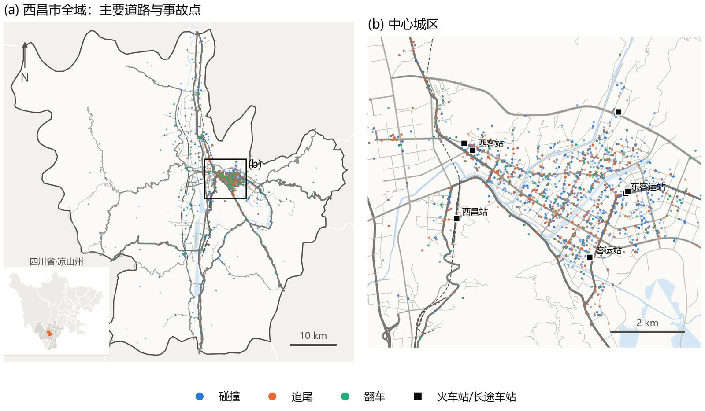
"The data were police call records with free text and landmark addresses. We extracted crash type, participants and injuries with keyword rules plus manual checks. We geocoded the addresses with the AMap API. Then I audited location quality. The 9,384 points sat on only 1,992 unique coordinates, up to 197 crashes per point. Only 13% could be linked to intersections, versus 40–50% internationally. So I report intersection rankings as 'crashes that could be located to a junction', not full junction risk. I also found a mislabelled layer in the geodatabase by its row count and excluded it."
- 接警口径比官方事故统计宽得多。它包含大量仅财产损失的轻微事故。"伤亡数"是受伤人次，不能换算成死亡。
- 空间分析对地标附近的点有聚集性偏差。路口排名应读作"能定位到路口的事故"排名。
- 我没有保留文本提取的抽检准确率。也没有记录地理编码失败率。
- 原始微观数据结题后没有保存。2026 年只能用四样东西重算：汇总表、GDB 里的 9,384 个点、LCLQ 结果、28,847 个 POI。LightGBM 和 DTW 聚类无法重跑。
2 · 谁受伤、何时发生：描述统计里的三个"反直觉"
描述统计不只是画柱状图。这一节的三个结论都靠选对暴露量才成立。暴露量就是分母。严重程度用每起伤亡人数，天气用天数。昼夜没有暴露量，这是一个局限。
2.1 参与者组合与严重程度
原理
数据里没有伤害分级。所以我用每起事故伤亡人数代表严重程度 K/N。k 是伤亡人数，n 是事故数。率 k/n 的 95% 置信区间用 Garwood 精确泊松区间：
做法与结果
我做了 6 × 6 的参与者组合矩阵。矩阵对称，只看上三角。每格算 k/n 和置信区间。
- 机动车 × 机动车 11,407 起（57%）。每起只有 0.06 人伤亡。
- 最危险的组合是大型车 × 行人：70 起，143 人。每起 2.04 人（CI 1.72–2.41）。这是全市均值 0.26 的 8 倍。其后是行人 × 三轮 1.11、行人 × 两轮 1.07、机动车 × 行人 1.04。机动车 × 两轮每起 0.66，但基数大。它的伤亡 1,746 人，占全部伤亡三分之一。
- 涉弱势者事故 5,223 起（26.1%）→ 4,050 人伤亡（79.1%），每起 0.78 人。非弱势事故 14,767 起 → 1,072 人，每起 0.07 人。两者比值 10.7 倍。所有涉弱势组合都显著高于均值。所有纯机动化组合都显著低于均值。两组的 CI 不重叠。
经济学读法：不对称碰撞中，边际外部成本几乎全由重的一方造成（Lindberg 2001）。轻的一方承担这些成本。所以矫正政策应针对重的一方：限速、限行、路权、物理隔离。政策不应落在对弱势方做"安全教育"上。
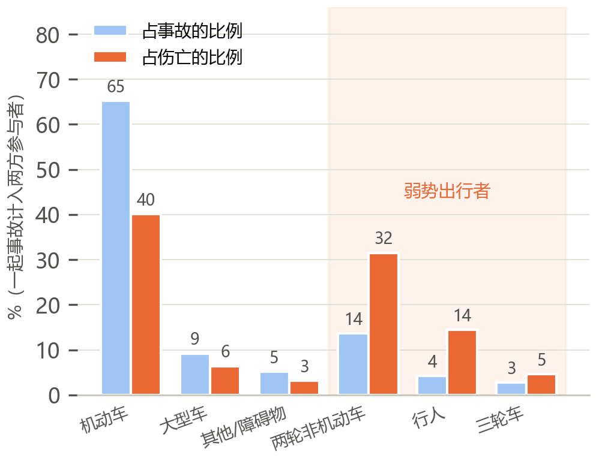
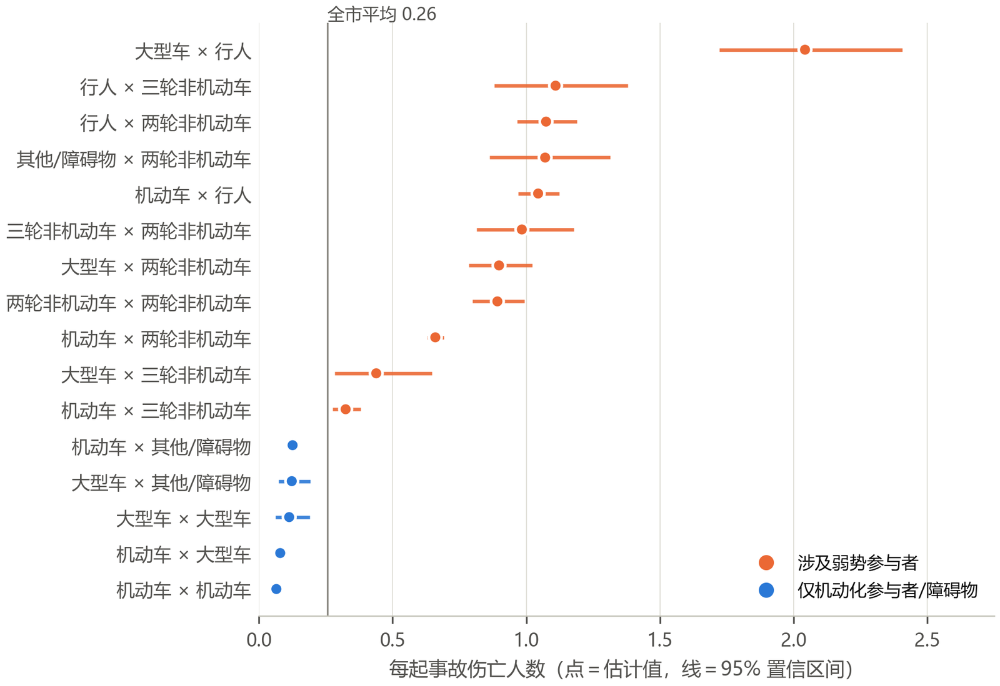
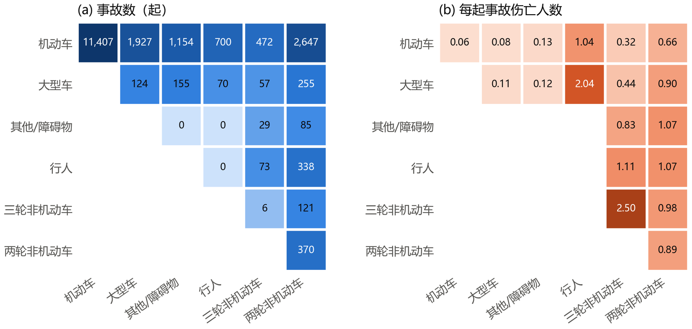
2.2 天气：暴露混淆与风险补偿
原理
直接比较各天气的事故总数不对。总数会被天数混淆。我用该天气的天数做暴露量。然后算日均事故率，再算相对晴天的率比（rate ratio）：
| 天气 | 天数 | 事故 | 日均 | RR vs 晴 | 95% CI | 夜间占比 |
|---|---|---|---|---|---|---|
| 晴 | 135 | 7,652 | 56.7 | 1.00 | — | 21.0% |
| 多云 | 46 | 2,574 | 56.0 | 0.99 | [0.94, 1.03] | 19.7% |
| 小雨 | 151 | 8,155 | 54.0 | 0.95 | [0.92, 0.98] p = 0.002 | 20.6% |
| 中雨 | 24 | 1,283 | 53.5 | 0.94 | [0.89, 1.00] p = 0.05 | 18.9% |
| 大雨 | 5 | 326 | 65.2 | 1.15 | [1.03, 1.29] p = 0.013 | 19.0% |
2023 年原报告说"小雨天事故最多（8,155 起，41%）"。这是典型的暴露混淆。小雨日有 151 天，比晴天 135 天还多。调整天数后，小雨和中雨日的事故率反而比晴天低 5–6%。只有大雨显著更高。这符合风险补偿（Peltzman 1975）。司机能感知轻度路面风险。他们会减速、拉大车距、减少出行，抵消了风险。大雨时能见度骤降、路面积水。这超出了补偿能力。
规划含义：雨天宣传教育的边际收益低。有效的做法是降低大雨时的物理风险。例如排水、抗滑路面、积水点标识、暴雨预警期干道管控。
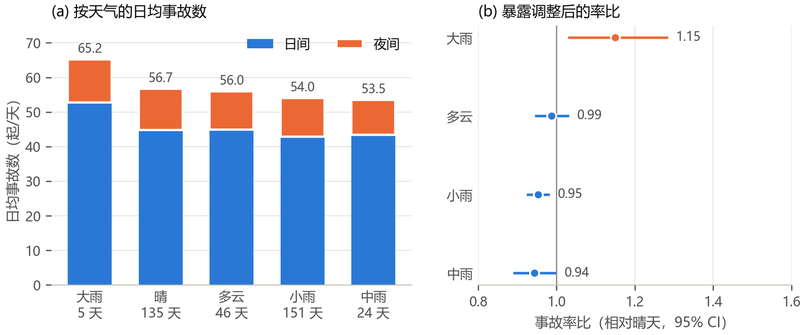
2.3 昼夜、季节与日内节律
- 昼夜：日间 15,891 起，夜间 4,099 起（20.5%）。夜间占比在五种天气下几乎不变（19–21%）。这说明天气效应和昼夜效应可加，没有交互。按 12 小时对分，日间事故率是夜间的 3.9 倍。这个差距绝大部分来自暴露量。夜间交通量通常只有日间的 15–25%。我没有分时交通量。所以无法评估路灯的边际收益。
- 年内：1–6 月低而平稳。7 月起上升，8 月处于高位，原因是暑期旅游。10 月再抬升。12 月到峰值，原因是安宁河谷冬季多雾。
- 日内：0–6 时极少。7 时陡升。8 时和 18 时是双峰。20 时后回落。
DTW 聚类（2023 原始分析，无法重跑）：路段的"事故节律"分三类
原理：DTW（dynamic time warping）是一种距离度量。它允许两条时间序列在时间轴上伸缩对齐。所以它能容忍峰值错位。每条路段有一个 168 小时（一周）的事故序列。我对序列两两算 DTW 距离，再做 k-medoids 聚类。簇数 k 由两个指标共同选定：平均 DTW 距离和轮廓系数 S = (b − a) / max(a, b)。a 是到同簇其他点的平均距离。b 是到最近其他簇的平均距离。
结果：k = 3。三个簇正好对应三个事故密度层级。稀疏路段（周均 < 2.5 起）没有日内模式，近似随机。中等路段（< 5）只有晚高峰单峰。密集路段（< 10）有早晚双峰，凌晨也不为零。含义：密集路段的安全投入可以按时段配置，例如高峰配时、执法。稀疏路段只能按空间配置，例如工程措施。


"Vulnerable road users were in 26% of crashes but took 79% of the injuries. Rain looked dangerous by raw counts. Then I divided crashes by the number of days with each weather. Light and moderate rain had lower crash rates than clear days. This is consistent with risk compensation. Only heavy rain was significantly higher. Throughout, I used Garwood Poisson intervals and rate ratios, not raw counts."
3 · GIS 空间分析：从"点"到"热点"到"路段"
空间分析分三层。第一层是连续面：用核密度 KDE 看事故在哪里集中。第二层是网格统计。Gi* 和 Moran's I 回答"集中是不是显著"。洛伦兹曲线回答"有多集中"。第三层是路网：把事故点吸附到 OSM 路段和路口。路段和路口才是工程能操作的单位。
3.1 核密度估计（Kernel Density Estimation）
原理
在每个事故点上放一个平滑的"核"，像一个小山包。所有小山包叠加，就成了连续的密度面：
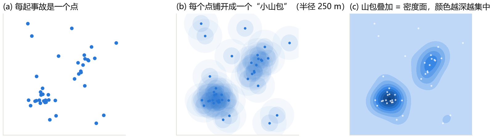
2023 vs 2026 的差别
- 2023：用 ArcGIS Pro 的 Kernel Density 工具，搜索半径 0.01。坐标系是 WGS84，所以这是 0.01 度 ≈ 1.1 km。输出单位是"每平方度"，没有物理意义。所以当时报告里出现了 273,500 这类峰值。
- 2026：先投影到 UTM 48N。用 250 m 高斯核、100 m 网格。密度单位是 起/km²。每类事故用独立色标。
结果
三类事故共享一个核心区。核心区是老城商业区，由长安中路、长安南路、航天大道一段、三岔口南路围合。核心区还包括沿长安路的走廊：向东到东客运站，向西到西客站。峰值密度：碰撞 > 300 起/km²，追尾约 180，翻车只有 25。碰撞和追尾沿主干道线状延伸，在路口结节。翻车更分散。翻车在城外 G5 经久乡段、G348 合盐路段独立聚集。原因是弯道和坡道。
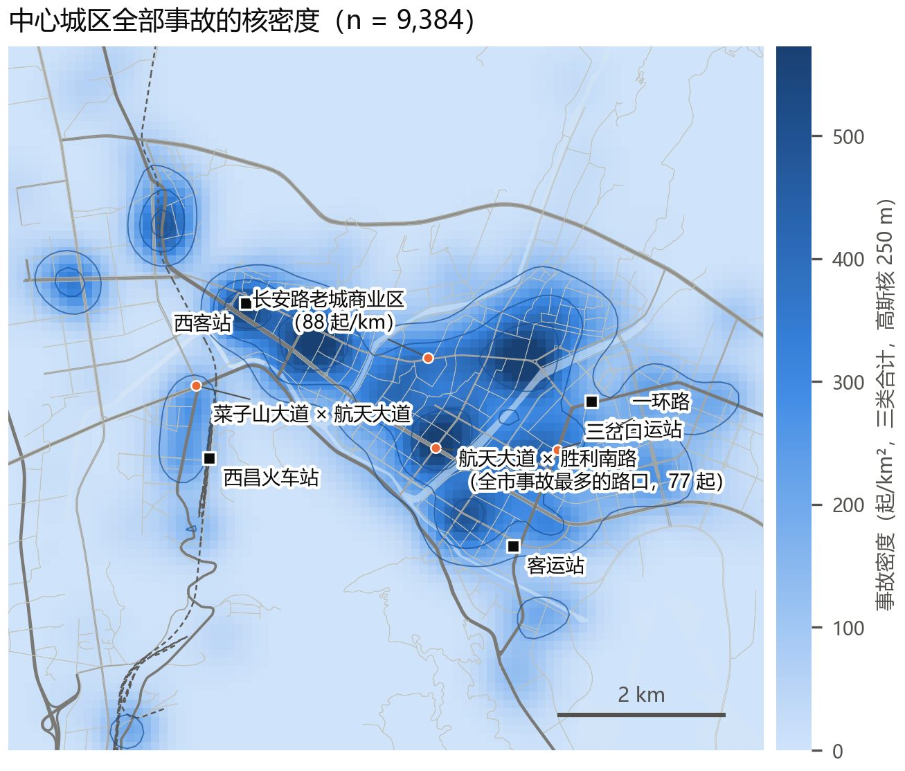
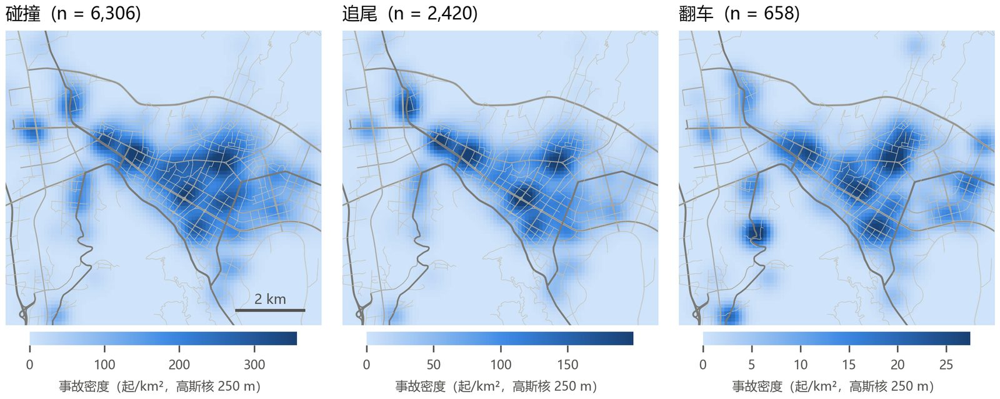
3.2 有多集中：洛伦兹曲线与基尼系数
我把有事故的 250 m 网格按事故数降序排列。然后画累计曲线。三类合计有 830 个有事故网格。最密集的 5% 网格承载 32% 事故，10% 承载 48%，20% 承载 67%。三类合计的 Gini 0.64。分类型看：碰撞 0.59、追尾 0.57、翻车 0.41。
边际收益曲线的读法：覆盖前 10% 网格，就触及近一半事故。这些网格约 80 个，约 5 km²。再加 10% 网格，只新增 19 个百分点。此后每加 10% 网格，不到 10 个百分点。这是"核心区 30 km/h 区"建议的直接依据。
局限：可变面元问题（MAUP）。网格大小会改变 Gini 和相关系数。网格在 100–500 m 之间时，结论方向稳定。但我没有系统报告敏感性。
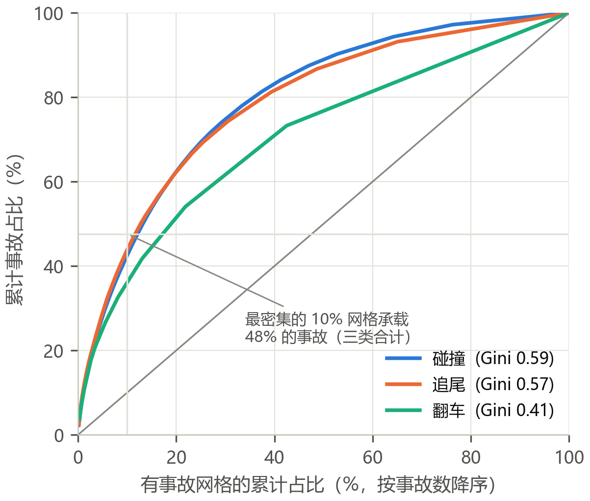
3.3 集中是否显著：Moran's I 与 Getis-Ord Gi*
全局 Moran's I（Moran 1948）
局部 Getis-Ord Gi*（Getis & Ord 1992）
Gi* 和 KDE 的区别：KDE 是密度。它只告诉你"这里多"。Gi* 是统计量。它告诉你"这里和邻居一起高"，而且高到不像随机。Gi* 看邻域之和与全局均值的偏离。所以一个孤立的高值格不一定是热点。一片中等偏高的连片区域反而可能是热点。
做法与结果
中心城区有 1,188 个 250 m 网格。Gi* 用 3 × 3 卷积。Moran's I 用 Queen 邻接，不含自身，999 次置换。结果 Moran's I = 0.29（p = 0.001）。95% 以上的热点有 156 个网格，其中 128 个达 99%。它们占网格 13%，含 65% 的事故（3,764 起）。热点连成一条"热点带"：西客站 → 长安路 → 老城商业区 → 东客运站 → 沿航天大道向东南。没有显著冷点。
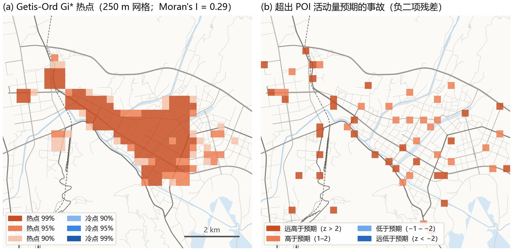
3.4 路网筛选：吸附到 OSM 路段与路口
为什么要做：工程措施按道路和路口实施。网格热点对工程不可操作。所以我把事故点吸附（snap）到最近路段。然后按道路名汇总事故数和每公里事故数。每公里事故数的暴露量是同名道路的 OSM 总里程。路口 = 度 ≥ 3 的节点。路口 30 m 内的事故计为"路口相关"。
做法：用 osmnx 取核心区 drive 路网 3,424 段，加市域国省道 / 主干路 2,744 段。投影到 UTM 48N。吸附用 geopandas.sjoin_nearest(max_distance=60)。道路名取 OSM 的 name 字段。
结果
- 前 15 条道路占里程 8.7%，承载 33% 的匹配事故。按事故数排：航天大道 534 起（9 起/km）、武大线 288、一环路 218、合盐路二段 206、海滨中路 159。但每公里最高的是老城短街。长安路 88 起/km、长安东路 70、春城路 55、长安中路 53。
- 按 OSM 等级：trunk 16.9 起/km、secondary 13.4、tertiary 8.2、primary 只有 6.0。密度和等级不单调。
- 翻车前三都是过境干道：风箱口桥段 33、武大线 28、航天大道 27。
- 路口：航天大道 × 胜利南路 77 起居首，其中碰撞 42、追尾 33。第二名只有 36 起。前 15 个路口占可定位到路口事故的 47%。
局限：路网是 2026 年的。路口相关比例 12.9% 是地理编码口径造成的。同名道路会稀释每公里密度，例如航天大道 OSM 合并里程 58.6 km。
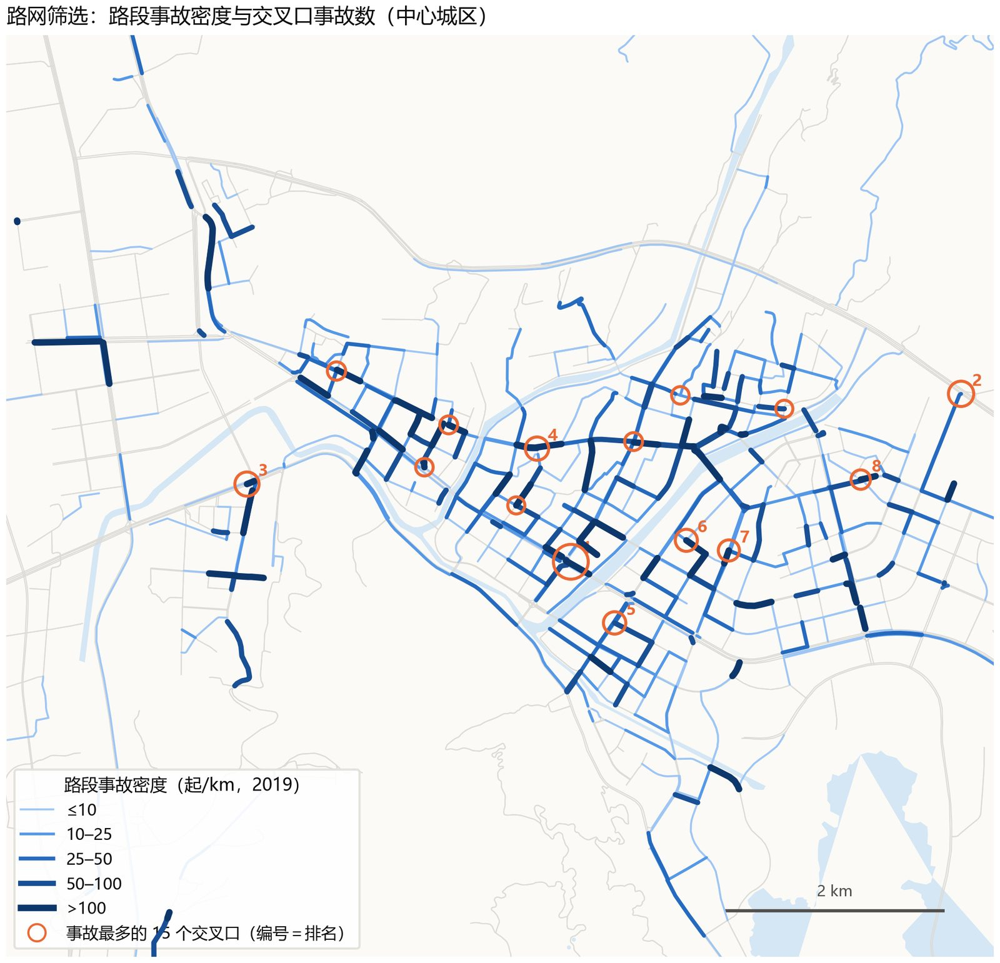
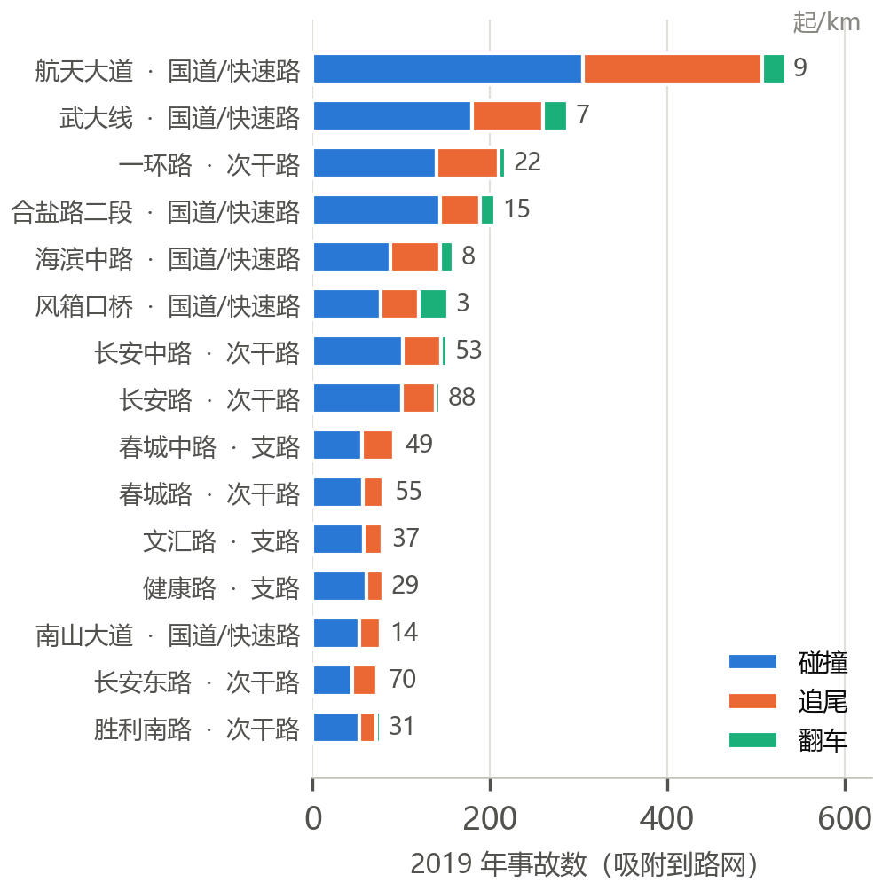
3.5 建成环境：POI 相关、负二项残差、枢纽距离带
负二项回归（Negative Binomial）原理
事故计数过度离散，方差 > 均值。所以泊松模型不合适。我用负二项模型：
皮尔逊残差 zi = (yi − μ̂i) / √(μ̂i + α μ̂i²) β1 是对数弹性：POI 增加 1% → 事故增加 β1%。z > 2 的网格记为"显著高于活动量预期"。这对应恒等式里的"风险"部分，不是"暴露量"部分。
结果
- 500 m 网格的 Spearman ρ = 0.82。最密集五分位每格 87 起，最稀疏 1.7 起。
- 但单位活动事故随密度下降：每 100 个 POI 的事故数从 Q1 113 → Q5 23。密度对安全是正外部性，因为车速低。这个效应被活动总量掩盖了。
- NB 结果：β1 = 0.65（s.e. 0.04），α = 2.0。z > 2 的超额网格有 33 个。它们实际 1,484 起，预期 204 起。前 8 个超额网格几乎全在过境干道：武大线、丹桂桥、一环路、航天大道。武大线的网格：77 起 / 2 个 POI / 预期 2.2 / z 21.3。
- 枢纽：客运站 1 km 内的密度是 2–3 km 带的 10 倍。但每 100 POI 事故在各环带持平（25–35）。所以客运站的高密度完全由活动强度解释。火车站不同：0–0.5 km 每 100 POI 52 起，向外单调下降到 27。这说明站前区域自身有风险。原因是出租、三轮、行人、接送车混行。
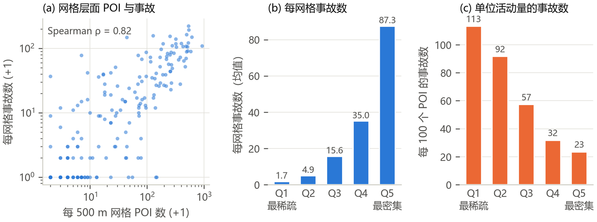
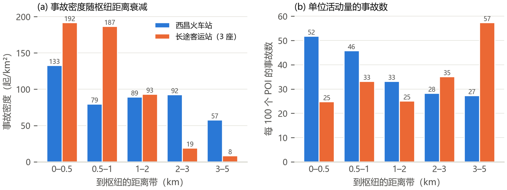
"I used ArcGIS Pro for kernel density by crash type, Getis-Ord Gi* and Moran's I. I also used it for colocation quotients between crash types and POI types, and for maps for non-technical readers. I used Python GeoPandas for the reproducible parts. I snapped 9,000 crashes to OSM to rank roads and intersections. I also did grid statistics and negative-binomial residual maps. One insight: the hot-spot and colocation analysis showed where crashes 'live'. The demand model later showed how much of that was simply exposure."
4 · 协同区位商（Colocation Quotient, CLQ / LCLQ）我独立完成
问题："碰撞事故是不是更爱发生在购物中心旁边？"直接数缓冲区里的 POI 不行，购物 POI 本来就多。CLQ 用"A 附近 B 的比例"除以"B 在全市的比例"，这样就控制了 B 的数量。它是非对称的，有局部版本和置换检验。
全局 CLQ
这张卡讲 CLQ 的定义和出处。Leslie & Kronenfeld (2011) 提出全局 CLQ。Cromley, Hanink & Bentley (2014) 提出地理加权版本。Wang et al. (2017) 提出带置换检验的局部 CLQ。ArcGIS Pro 的 "Colocation Analysis" 工具就基于 Wang 这一版。
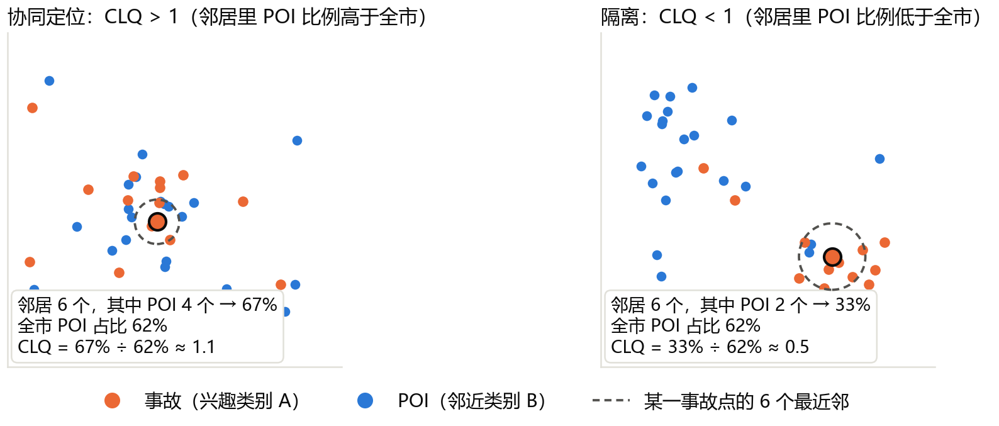
局部 LCLQ（每个 A 类点一个值）
wij = exp( −0.5 · dij² / dib² ) （高斯核；dib 为点 i 的带宽距离） j ∈ B 时 fij = 1，否则为 0。近的邻居权重大。到带宽处权重接近零。
ArcGIS Pro 工具的机制
- 邻域定义：K 最近邻（默认 8）、距离带，或空间权重矩阵。
- 核函数：高斯核的权重随距离衰减。箱型核等权。
- 显著性：用局部置换检验，默认 99 次。每次随机重排 B 类标签，重算 LCLQ。由此得到 p 值。
- 输出字段：
LCLQ、p-value、LCLQTYPE。LCLQTYPE 有五类：Colocated–Significant、Colocated–Not Significant、Isolated–Significant、Isolated–Not Significant、Undefined。Undefined 表示邻域内没有 B 类点，LCLQ 算不出来。全局 CLQ 表也给每对类别的 p 值。
术语：2023 年全文叫"区位熵"。答辩评审指出，这个概念是"商（quotient）"，不是"熵（entropy）"。重构后统一叫"协同区位商 CLQ"。
本项目怎么做
2023 年我在 ArcGIS Pro 中跑了三套分析。(1) 事故类型之间的全局 CLQ（5 × 5）。(2) 10 类 POI（兴趣类别 A）× 5 类事故（邻近类别 B）的全局 CLQ（10 × 5）。(3) 30 组局部 LCLQ（3 类事故 × 10 类 POI），GDB 留存 25 组。2026 年我用 Python 重绘热图，再算净协同指数。我还读 GDB 的 LCLQTYPE 字段，重绘显著点地图。
结果
① 事故类型之间：全部 3.5–8.6，远大于 1
任何一类事故的邻域内，其他事故的比例都是全局的 3–4 倍。事故类型之间没有空间分工，它们共同响应交通量和冲突点密度。翻车自协同 8.63最高，"其他"自协同 6.36 第二。这两类地点特异性强（弯道、坡道、路面），最适合工程"定点清除"。
② POI → 事故：几乎全部 < 1（0.35–0.95）
餐饮 0.36–0.46、购物 0.35–0.46、生活服务 0.39–0.51……略 > 1 的只有三对：政府机构 × 翻车 1.24（p = 0.02，唯一显著）、商务住宅 × 其他 1.21、科教 × 其他 1.04。
③ 局部 LCLQ：80–90% 的点不显著
净协同 = 显著协同% − 显著隔离%。结果：政府机构 +2.2、商务住宅 +2.2、科教 +1.6、体育 +1.2、医疗 +0.7；住宿 0；生活服务 −0.9、公司 −1.6、餐饮 −1.6、购物 −5.4。
④ 解释的升级：从"管理重点"到"速度环境"
2023 年把购物 / 公司的隔离解释为"车流大、交警管理重点、驾驶人警惕"。把住宅 / 政府的协同解释为"生活化使驾驶人随意"。2026 年改成速度环境：购物街、餐饮街最拥堵，车速最低，低速抑制了需要报警的事故。政府机构、学校、商务住宅沿线道路更宽更快。这和另外三条证据互证："单位活动事故随密度下降""NB 残差集中于过境干道""火车站超额"。
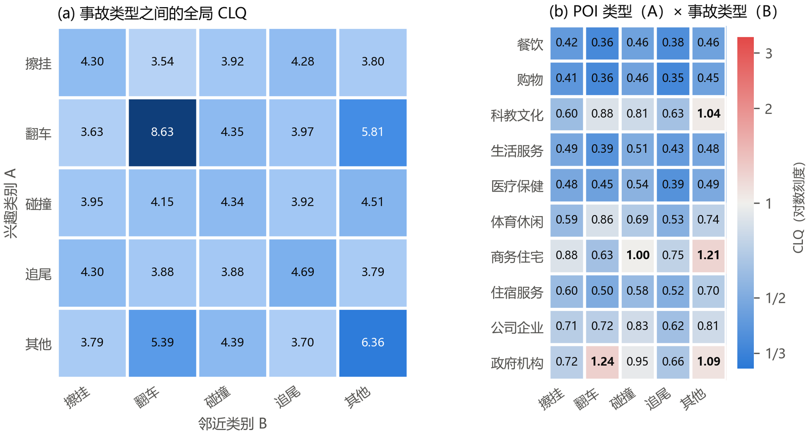
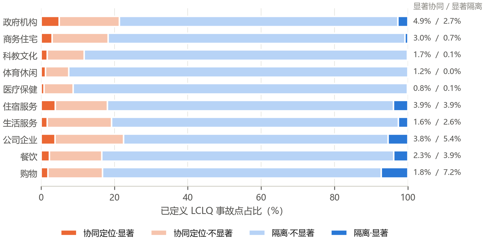
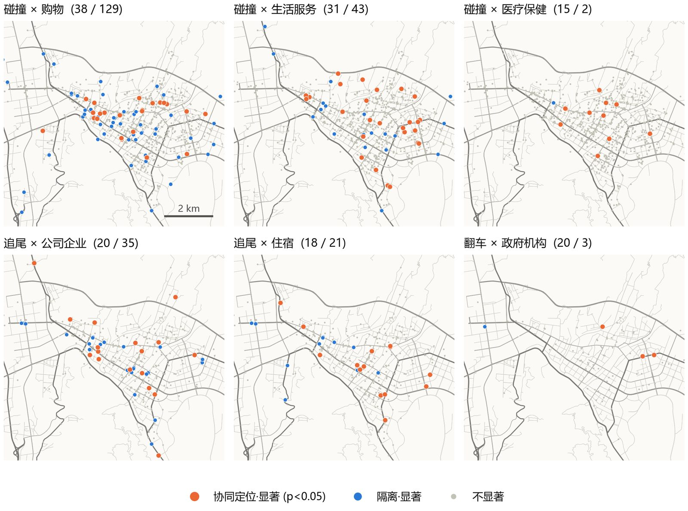
附录：全部 25 组 LCLQ 图层
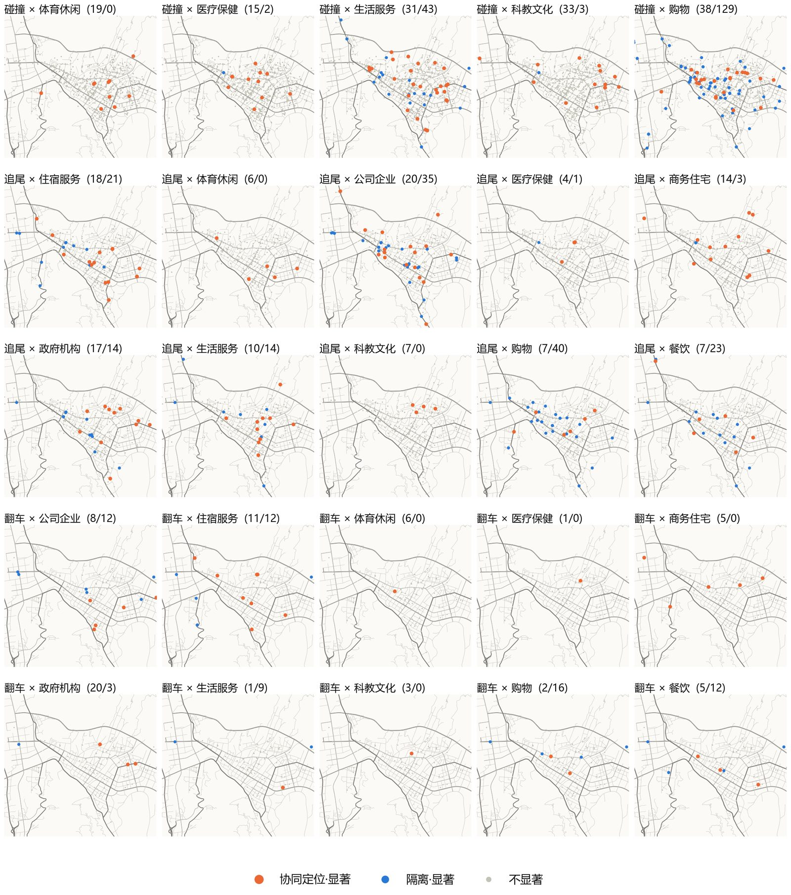
"A buffer count tells you how many shops are near crashes. It does not tell you if that is more than you expect, given how many shops exist. The colocation quotient divides the share of B among A's nearest neighbours by B's global share. So 1 means random. It is asymmetric. It has a local version with a Gaussian kernel. ArcGIS Pro tests significance by permuting labels. I also found a scale artefact. When B vastly outnumbers A, the B-to-A quotients are systematically below 1. So I interpret the direction, not the magnitude. Next time I would subsample POIs."
- 尺度效应（POI ≫ 事故点）。LCLQ 显著性没有做多重检验校正。K 近邻 / 带宽用 ArcGIS 默认值，报告里没有记录具体值。
- GDB 有一个贴错标签的图层（追尾当成碰撞 × 餐饮）。另有 5 组图层没有留存。
- 2026 年重构时删除了与西昌无关的模板文字。
- 2023 年曾误把属性表里的 Neighbor prevalence（邻域内 POI 占比）当成事故密度。
5 · 机器学习：LightGBM + SHAP，以及没做完的贝叶斯网络
路段层面的问题：2,847 条路段，13 个特征（用地、枢纽距离、道路属性），哪些驱动了事故数？传统泊松 / 负二项回归要求严格假设。但这些特征高度共线，还有阈值和交互。GBDT 自动处理非线性和交互，代价是不可解释。所以用 SHAP 把结果翻译回来。模型由队友训练我参与 SHAP 解读
5.1 GBDT 与 LightGBM 原理
梯度提升决策树（GBDT）：预测 = T 棵回归树之和，f(x) = Σt ht(x)。每棵新树拟合当前损失函数的负梯度，也就是残差。树一棵一棵地"纠错"。
LightGBM（Ke et al., NIPS 2017，微软）比 XGBoost 更快、更省内存。它原生处理类别变量，对共线性稳健。它靠三项技术：
- GOSS（gradient-based one-side sampling）：保留梯度绝对值最大的 top a × 100% 样本。从其余样本随机抽 b × (1 − a) × 100%，并放大权重 (1 − a)/b。梯度大 = 当前模型拟合得差 = 信息多。这些样本要重点保留。
- EFB（exclusive feature bundling）：把互斥的稀疏特征捆成一个特征。互斥指不同时非零。这样可以降维。
- 直方图算法 + leaf-wise 生长：把连续特征分箱。按叶子最大增益生长，不逐层生长。
为什么选它：路段事故数是过度离散的计数。特征高度共线，例如车道数与等级、办公密度与灯光。特征还有阈值和交互。GBDT 自动处理非线性和交互，对共线稳健。代价是可解释性弱，所以配 SHAP。
5.2 SHAP 原理
SHAP（SHapley Additive exPlanations, Lundberg & Lee 2017）把每个预测分解为可加的贡献：
φj = ΣS ⊆ F∖{j} [ |S|! (|F| − |S| − 1)! / |F|! ] · [ fS∪{j}(x) − fS(x) ] φj 是博弈论的 Shapley 值（Shapley 1953）。它是特征 j 在所有可能加入顺序下的平均边际贡献。它满足四条性质：效率性（各项之和等于预测与均值之差）、对称性、哑元、可加性。精确计算是 2|F| 指数级。TreeExplainer（Lundberg et al. 2020）对树模型能在多项式时间内精确计算。
直觉：把 13 个特征想成 13 个队友。他们一起"凑出"这条路段的事故数。某个特征的 SHAP 值，就是它平均"贡献"了多少起事故，可正可负。这个平均对所有加入顺序取，所以公平。
5.3 怎么读 SHAP 图
| 图 | 横轴 / 纵轴 / 颜色 | 看什么 |
|---|---|---|
| Summary plot（蜂群图） | 每行一个特征，按平均 |SHAP| 降序。每点一条路段。横轴是 SHAP 值，本项目的单位 = 事故起数的偏移。颜色 = 特征取值，红高蓝低。 | 红点在右 → 高取值增加事故。点云横向宽 → 影响大。颜色左右分层清晰 → 关系单调。 |
| Importance bar | 平均绝对 SHAP，(1/n) Σ |φij| | 特征重要性排序。它比 gain-based importance 更稳定。 |
| Dependence plot | 横轴是特征值。纵轴是该特征的 SHAP 值。点色 = 第二个特征取值。 | 看非线性，如阈值、拐点。同一横坐标下颜色分层 → 交互效应。 |

5.4 本项目的做法与结果
数据：2,847 个路段。因变量 = 路段事故数（计数，不是率）。13 个特征分三组。用地：办公 / 商业 / 居住 POI 数、WorldPop 人口密度、夜间灯光。枢纽：到火车站 / 机场 / 长途车站的距离。道路：管理等级、车道数、形态、隔离状态、流向。
平均 |SHAP| 分三档。第一档 > 4：办公立地 7.3、火车站距离 4.5、道路管理等级 4.4、车道数 4.2。第二档 2.5–3.5：商业、机场距离、居住、人口密度、长途站距离、夜间灯光。第三档 < 1.6：道路形态、隔离状态、流向。
方向：用地全部正向。枢纽距离全部负向，越近事故越多。等级越高、车道越多，事故越多。物理隔离路段的 SHAP 几乎全为负。它是模型中唯一系统性降低事故的道路属性。
依赖图里的七个形态
- 办公 POI < 50 时 SHAP ≈ 0。> 50 后近似指数上升。最密路段 +40 到 +50 起。这是阈值效应。
- 居住密度拐点约 100。它与道路等级交互：同密度下，高等级路事故更多。
- 夜间灯光 < 20 时 SHAP 全负。> 50 时显著升高。
- 商业用地非线性，但总体上升。商业与办公同时密集处，SHAP 明显高。
- 枢纽效应是局部的。火车站 3 km、机场 5–7 km、长途站 1–2 km 内 SHAP 正且波动大。之外归零。近枢纽路段也是商业密集路段。枢纽通过周边活动起作用。
- 车道数 ≤ 3 全负，≥ 4 全正，≥ 8 再跃升。这是最干净的设计信号："宽路更危险"，指事故负担意义上。
- 双向分离道路在经济活跃区 SHAP 最高。辅路也在活跃区，但贡献极低。这说明把过境与到发交通分离本身有效。
经济学解读：用地与枢纽主要通过暴露量起作用。等级与车道数同时作用于暴露量（车多）和风险（更高设计速度、更复杂换道）。这是风险补偿的反向版本："路越安全，开得越快"。物理隔离不依赖驾驶人自觉，是 Safe System 的核心。国际证据：城市干道做物理中央隔离，可减少 20–40% 伤人事故。办公阈值效应说明，用地审批应引入交通影响评价，把外部性内部化。


- 模型解释的是事故数，不是事故率。我们没有路段交通量。任何抬高交通量的特征，都同时通过暴露量和风险两个渠道起作用。模型分不开这两个渠道。第二阶段的 SPF 给出旁证：同等级内，事故随车公里的弹性只有 0.00–0.45。这说明"高等级道路事故多"很大一部分是交通量。
- 相关不是因果。SHAP 的方向比大小可靠。结果可能被未观测的交通量、路口密度、限速混淆。
- 结题论文没有报告预测精度指标（无 RMSE / R²，无训练测试划分说明）。超参数没有保留。原始数据丢失，无法重训练。图直接引用 2023 年版本。
- 如实分工：模型训练由队友完成。我参与特征解释。2026 年我独立重新解读。
"The team trained a LightGBM model of segment crash counts. It used 13 land-use, hub-distance and road-design features. My part was the SHAP interpretation. Office density had a threshold around 50 POIs. Lane count flipped sign at four lanes. Physical medians were the only design attribute with consistently negative SHAP. The caveat I raise first: the target was a count, not a rate. So exposure and risk were confounded. Phase 2 fixed exactly that. It showed that much of the road-class effect was traffic volume."
5.5 贝叶斯网络（2023 原方法，未完成）
原理
贝叶斯定理：P(A|B) = P(B|A)·P(A) / P(B)。贝叶斯网络是有向无环图（DAG）。节点 = 随机变量，边 = 条件依赖，无边 = 条件独立。联合分布 P(X1…Xn) = Πi P(Xi | parents(Xi))。结构可以由专家设定，也可以从数据学习。学习方法分两类：score-based（如 BIC / K2）、constraint-based（如 PC）。参数是条件概率表（CPT），用 EM 或极大似然从数据学习。优点：能处理不确定性和缺失，能做多场景推断。例如"下雨 + 夜间 + 路灯差时，严重事故概率多少"。
互信息用于特征选择：I(X;Y) = Σ p(x,y) log[p(x,y) / (p(x)p(y))] = H(Y) − H(Y|X)。它度量"知道 X 后，Y 的不确定性减少多少"。
本项目做到哪一步
工具是 GeNIe。2023 年先做了变量离散化和边际分布（N = 19,990）。严重程度：轻微 77% / 中等 20% / 严重 3%。可见度：好 41 / 中 34 / 差 25。路灯：好 59 / 中 26 / 差 14。日间 79 / 夜间 21。天气：晴 38 / 多云 13 / 小雨 41 / 中雨 6 / 大雨 2。路面：干 51 / 湿 49。网络结构按文献和经验设定：天气 → 路面、可见度；照明 + 路灯 → 可见度；参与者 → 碰撞类型；路面 + 可见度 + 碰撞类型 → 严重程度。参数学习与验证没有完成。
能说的只有描述性结论。严重程度高度偏斜：3% ≈ 600 起"严重"，几乎全部集中在涉弱势者与大型车的组合。可见度"差"占 25%，而夜间只占 21%。这说明可见度差也来自降雨和雾。严重程度的方差主要来自"谁撞了谁"，不是天气或照明。

6 · 经济学框架：一个恒等式、三个概念、七项建议
2026 年重构时，我换掉了 2023 年的框架。旧框架是"特征分析 + 影响因素识别"。新框架是交通安全经济学的一个恒等式。恒等式本身没有新信息。它的价值是把每一项政策工具对应到一个维度。它还能解释一点：在事故已经集中的地方降低严重程度，回报最高。
恒等式
暴露 exposure × 风险 risk × 严重程度 severity × 单位成本 unit cost 出处：Hakkert 2002；Elvik 2009。i 是任意分层，例如路段、时段、参与者组合。E 是暴露量，例如车公里、人公里、出行次数。N 是事故数。K 是伤亡数。C 是成本。
| 维度 | 对应的政策工具 | 本项目的证据 |
|---|---|---|
| 暴露量 E | 土地利用、需求管理、过境分流、方式转移 | 第二阶段：车公里解释了"过境干道超额"的大部分。2035 政策情景小汽车份额 −5 pt，可避免一半事故增量。 |
| 风险 N/E | 道路设计、速度管理、接入管理、路口渠化 | SHAP：物理隔离是唯一负向变量。EB 超额事故集中在武大线、合盐路二段。VISSIM：保护左转使交叉冲突 −79%。 |
| 严重程度 K/N | 弱势者保护、限速 30 km/h、大型车管理 | 弱势者占 26% 事故，却占 79% 伤亡。大型车 × 行人：2.04 人/起。 |
| 单位成本 C/K | 急救、医疗、保险 | 本项目未涉及 |
一项干预的边际收益 = 它改变的那一项 × 其余三项。热点带的暴露量和风险都已经很高。在那里降低严重程度，乘出来的收益最大。
三个经济学概念
严重程度与速度
碰撞动能 ∝ v²。行人被 30 km/h 的车撞，死亡率约 10%。被 50 km/h 的车撞，死亡率 > 80%（Elvik 2013；ITF 2016）。Nilsson 速度幂律：伤人事故数 ∝ v2，死亡事故 ∝ v4。车速降 10% → 伤人事故约 −19%。在弱势者密集区限速 30 km/h，同时改变"是否发生"和"多严重"。只有这一项措施能同时做到两点。
社会成本情景估算
原理：事故成本 = 人身伤害成本 + 财产损失与行政成本 + 拥堵等间接成本（Elvik 2009；Viscusi & Aldy 2003）。人身伤害成本包括 VSL、医疗、误工、痛苦。VSL 是统计生命价值（value of a statistical life），来自支付意愿研究。中国没有官方 VSL 标准。文献里的取值从数十万元到数百万元。
| 严重程度 | 事故数 | 单位成本低（万元/起） | 高 | 合计低（亿元） | 高 |
|---|---|---|---|---|---|
| 轻微 77% | 15,390 | 0.5 | 1.5 | 0.77 | 2.31 |
| 中等 20% | 4,000 | 5 | 15 | 2.00 | 6.00 |
| 严重 3% | 600 | 50 | 150 | 3.00 | 9.00 |
| 合计 | 19,990 | 5.8 | 17.3 | ||
| 占 2019 GDP（约 560 亿元） | 1.0% | 3.1% |
结果：6–17 亿元，≈ GDP 的 1–3%。这与 WHO"约 3%"的基准一致。严重事故只占 3%，却贡献一半以上成本。涉弱势者事故占四分之一，却贡献约四分之三的成本。
局限：单位成本是情景假设，不是西昌实测。GDP 560 亿是约数。结果只给量级和结构，不能当精确数字引用。
内部化路径与七项建议
内部化有三类工具。价格：与暴露量 / 风险挂钩的保费、按里程计费、货车进城费。价格理论上最优，但在地方层面最难做。规制：限速、货车限行、路权。规制依赖执法。环境：窄化车道、物理隔离、抬高过街、路口紧缩。环境一次投入，长期有效，是 Safe System 的核心。第四类作用于未来的外部性：用地审批中的交通影响评价。七项建议的排序指标 = 预期减少的事故成本 / 实施成本。效应量取自国际手册。
- 核心区高密度网格（前 10%，约 5 km²）设 30 km/h 区，加抬高过街、路口紧缩、安全岛。依据：弱势者占 79% 伤亡；Gi* 热点带 13% 网格含 65% 事故。效应：速度 −10% → 伤人事故 −19%。
- 大型车管理与站前交通组织：核心区货车限行时段和路线、右转盲区处置、火车站站前人车分离。依据：大型车 × 行人 2.04 伤亡/起；火车站 0.5 km 内单位活动事故是全市的两倍。
- 过境干道做物理中央隔离、接入管理、限速；老城次干路做路口渠化。依据：物理隔离是模型里唯一系统性降低事故的属性。第二阶段修正后：先投武大线、合盐路二段、长安路系，不投航天大道全线。效应：伤人事故 −20–40%。
- 用地审批加入交通安全评估和开发条件。依据：办公密度有阈值效应；枢纽 1–3 km 内事故集中。
- 治理大雨条件下的物理风险：排水、抗滑路面、积水点标识、暴雨预警期干道管控。依据：大雨 RR 1.15（1.03–1.29）。
- 翻车走廊（G5 经久段、G348 合盐段）做弯道坡道工程：限速、路侧护栏、标线。依据：翻车自协同 CLQ 8.63；翻车在城外独立聚集。
- 建立暴露量，也就是分母：交通量、伤害分级、坐标化接警。用 EB 做路网筛选。第二阶段已用示意级模型部分实现。
不建议三件事：雨天的一般性宣传教育；面向行人 / 骑车人的"安全意识"活动；在低密度外围新建宽阔干道。最后一项会复制"宽路更危险"的模式。
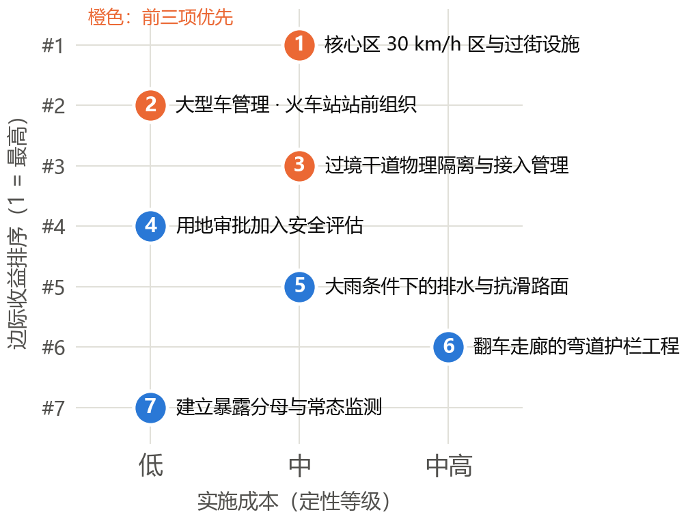
统计模型速查
- 泊松回归：ln μ = Xβ，Var = μ。事故数据常过度离散。
- 负二项回归（NB2）：Var = μ + αμ²。HSM 记法是 μ + kμ²，k 是过度离散参数。α → 0 时退化为泊松。
- 皮尔逊残差 z = (y − μ̂) / √Var̂。|z| > 2 近似 95% 异常。
- 率比 RR 和它的 CI：se(ln RR) = √(1/a + 1/b)。
- Garwood 精确泊松区间：[χ²0.025(2k)/2n, χ²0.975(2k+2)/2n]。
- 对数弹性：ln μ = β0 + β1 ln x → β1 = 弹性。
- GEH = √(2(M − C)² / (M + C))。GEH < 5 视为匹配良好。
2023 年答辩评审三条意见及回应
- "地图应改为路网图" → 我把全部地图基于 OSM 重绘，叠加铁路、水系、枢纽。
- "概念是区位商不是区位熵" → 全文统一用 CLQ，附录给定义。
- "只分析用地类型和聚集点过于宽泛，应细化到道路特征" → 我把道路等级 / 车道 / 形态 / 隔离分析并入主线。POI 关联重新解释为速度环境差异。建议落到具体道路和工程措施。第二阶段进一步落到路段级 EB 排名和具体路口。
7 · 为什么要做第二阶段：缺的是"分母"
第一阶段把 2 万起事故画在地图上。它回答了"事故在哪里"，但回答不了"为什么在那里"。原因是没有交通量。没有交通量，"事故多"和"车多"在数据上长得一模一样。第二阶段只有一个目的：补上暴露量（exposure），也就是分母。
核心恒等式
没有 E，就分不开下面两种问题。两种问题的对策完全不同：
美国的做法写在 HSM《Highway Safety Manual》第 4 章（network screening）。它要求先以 AADT 为暴露量建立 SPF。SPF 是安全性能函数，根据交通量预测一条路应该有多少事故。然后用经验贝叶斯（EB）做筛选。第一阶段报告的第 7 条建议就是"建立暴露量分母、用 EB 做路网筛选"。但当时做不到。
第一阶段哪些结论因此"站不稳"
| 第一阶段结论 | 缺少 E 带来的问题 |
|---|---|
| KDE / Gi* 热点、按事故数排名的前 15 条道路 | 排的是"事故多"，不是"危险"。大流量干道天然排前面。 |
| §6.4 负二项残差：过境干道（武大线 G348、航天大道、一环路、丹桂桥）事故"超出活动量预期" | 模型只用 POI 代表活动量，看不到过境车流。所谓"超额事故"可能只是没观测到的交通量。 |
| SHAP：道路等级、车道数对事故数有正效应 | 暴露量渠道（宽路车多）和风险渠道（宽路车快）混在一起。模型分不开它们。 |
第二阶段做了什么
四个研究问题（报告原文口径）
- Q1 出行格局：西昌人每天怎么出行、多远、用什么方式？
- Q2 路网负荷与稳健性：哪些路段早高峰过载？结论对参数敏感吗？
- Q3 安全暴露：控制交通量后，过境干道的超额事故是否还在？按事故率和 EB 排序怎么变？（核心产出）
- Q4 2035：人口增长和开发边界约束下，车公里和事故怎么变？
"Phase 1 mapped 20,000 crashes. It had no exposure denominator. So I could not separate 'many crashes' from 'many vehicles'. I built a four-step model to supply that denominator. I back-cast it to 2019. Then I re-ran the safety screening with vehicle-kilometres as exposure. The ranking flipped."
西昌没有居民出行调查，也没有路段流量计数。所以模型没有用流量计数校准。按 FHWA《Travel Model Validation and Reasonableness Checking Manual》的术语，我做的是 reasonableness check 和 sensitivity test，不是 validation。暴露量只覆盖机动车。电动自行车占出行的三分之一，但没有分配到路网。而弱势出行者的伤亡最重。
8 · 四步建模法（Four-step travel demand model）
四步法是美国 MPO / DOT 做区域交通规划的标准框架。它已经用了六十年。四步依次是：每个小区产生和吸引多少出行（出行生成）、这些出行从哪到哪（出行分布）、用什么方式（方式划分）、走哪条路（交通分配）。交通分配算出的拥堵时间再反馈回出行分布，循环到结果稳定。
点击方块跳到对应小节。出行目的分三类：HBW（家—工作，含返程）、HBO（家—其他，含上学）、NHB（非家）。出行生成到方式划分用 Python / numpy 自己写。阻抗矩阵和交通分配用 AequilibraE。
数据与小区系统
人口：ESSD 100 m 网格
普查只有乡镇街道级，共 25 个单元、95.5 万人。这比交通小区粗得多。Chen et al. (2024, ESSD) 用集成学习把七普人口下推到 100 m 网格。下推时以乡镇普查数为约束。格点落在哪个小区，我就把人口汇总到哪个小区。全市网格合计与普查只差 0.19%。现状年按 2025 年约 97.5 万放大。2019 年取 2020 年的 99%。
TAZ 划分（52 内部 + 14 外部）
小区过粗，区内出行全丢，也分配不到路网。小区过细，参数撑不住，形心连杆的人为效应放大。划分规则：以干路、铁路、河流切成面；不跨越高速 / 铁路 / 水面；各面人口量级相近。人口过大的单元再切一次，用居住区道路或人口加权 k-means。最小的单元贪心并入"最便宜"的邻居。结果是 52 个内部小区，人口中位数 7,900。14 个外部小区是 11 个道路出入口 + 青山机场 + 西昌站 + 西昌西站。西昌西站 2022 年底开通，只在现状年激活。研究范围外、模型范围内还有约 31 万外围人口。我把他们按最近出入口归集，在出入口生成进城出行。

路网：OSM 功能等级 → 通行能力与速度
供给侧需要每条路段的长度、方向、车道数、通行能力（pcu/h）、自由流速度和路阻函数参数。OSM 只有 21% 路段标了车道，0 条标了限速。所以我按 highway 等级查设计规范，赋默认值：
| OSM 等级 | 单向车道 | 通行能力 pcu/h/车道（低–基准–高） | 自由流 km/h | 依据 |
|---|---|---|---|---|
| motorway 高速 | 2 | 1,600 – 1,800 – 2,100 | 90 | JTG B01-2014 |
| trunk 国道 / 快速路 | 2 | 850 – 1,400 – 1,800 | 50 | CJJ 37-2012 表 4.3.2 |
| primary 主干路 | 2 | 800 – 1,350 – 1,700 | 40 | CJJ 37 |
| secondary 次干路 | 2 | 780 – 1,300 – 1,650 | 32 | CJJ 37 |
| tertiary 支路 | 1 | 700 – 1,100 – 1,600 | 25 | CJJ 37 |
| *_link 匝道 | 1 | 父等级 × 0.8 | 父等级 × 0.6 | CJJ 37 3.2.3 |
低值约等于设计通行能力 × 0.6。这反映信号交叉口的绿信比折减。自由流速度约等于设计速度 × 0.8。现状路网 1,500 条路段、876 km（双幅路算两条单向）。
2019 年路网怎么"回推"（back-cast）
我用 Overpass attic 查询 date:2019-12-31 取历史 OSM。难点是 2019 年西昌的 OSM 很不完整。现状干线有 38% 当时还没画。所以"2019 OSM 里没有"不能作为删除依据。做法分四步。第一，对每条现状路段算它在 2019 主路缓冲区内的覆盖比例。覆盖低的是候选。第二，拉取 way 历史。第三，候选按项目分组，逐项找正面证据（通车新闻、政府公告、"十四五"规划、OSM construction 标签）。据此判定 built_after_2019 或 existed_mapped_later。第四，证据与置信度记在 CSV 里。结果删除 9 个项目 134 km。例如北环线 2020-11 通车、菜子山大道西延 2021、宁远大道西延 2022、西昌西站片区路网。另加 20 km 因此断头的路段。2019 路网 1,245 条、723 km。路段 ID 不变，便于跨年比较。
口径说明：路网差异按"删除 9 个项目约 134 km"计，比按路段条数计准确。因为 1,500 − 1,245 = 255 条差异含断头段。
① 出行生成（Trip generation）
原理
出行生成估计每个小区的产生量 Pi（production，家端）和吸引量 Aj（attraction，非家端）。产生量常用出行率法：人口 × 人均日出行次数 × 目的比例。也可以用交叉分类法。吸引量用就业 / 建筑面积 × 吸引率。每个目的的 ΣP 必须等于 ΣA。所以要把吸引量配平（balance）到产生量总量。家端数据更可靠。NHB 两端都不在家，P = A，按非居住活动分配。
本项目
r = 2.5 次/人·日（低 2.1 / 高 2.8） sHBW = 0.40 sHBO = 0.50 sNHB = 0.10
Ajpraw = Σc POIjc · wpc → Ajp = Ajpraw / ΣApraw × ΣPp 出行率出自 GB/T 51328-2018 条文说明。桂林 2017 调查 2.13、宜兴 2002 调查 2.75 作为低高值。国内调查把"回家"单列。这里回程归回去程目的。所以 HBW ≈ 2 × 上班比例。NHB 取 10%。美国 NCHRP 716 约 30%，不适用于中国小城市。
吸引量权重 wpc 分两套。HBO / NHB 用 CJJ/T 141-2010 的高峰小时人次 / 100 m² 建筑面积中值（零售 15、餐饮 10、学校 12、医院 7.5、办公 3、居住 1.6）。HBW 用就业代理权重（办公 1.0、医疗 / 教育 1.5、零售 / 餐饮 / 服务 0.3、居住 0）。
外部出行分三部分。一是外围人口进城：外围人口 × r × 进城比例 0.25。二是公路出入口车流：G5 主线穿越 + 城区过境 + 进出城，用 IPF 配平。三是机场和铁路站的地面接驳。
结果：117.4 万人次/日（HBW 47.0 万 / HBO 58.7 万 / NHB 11.7 万）。外围人口每天 38,700 车次进城。对外与枢纽 57,800 车次。
局限：POI 权重按建筑面积制定，却用于个数。这隐含各类 POI 平均规模相近。结果是大型单位低估，小商铺密集区高估。出行目的结构借用宜兴 / 桂林。
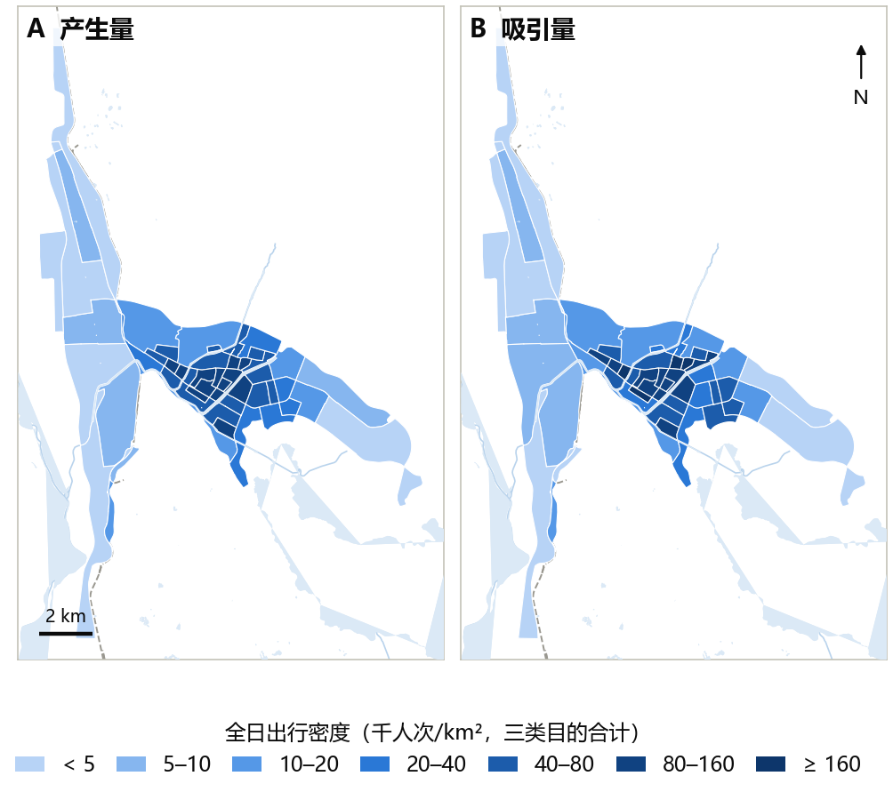
② 出行分布（Trip distribution）：双约束重力模型
原理
出行分布把 Pi、Aj 变成 OD 矩阵 Tij。重力模型类比牛顿引力。出行量与两端规模成正比，随阻抗 cij 递减。双约束（doubly constrained）要求行和 = Pi、列和 = Aj：
ai = 1 / Σj bj Aj f(cij) bj = 1 / Σi ai Pi f(cij) a 和 b 互相依赖。所以用 Furness / IPF（iterative proportional fitting）迭代。先设 b = 1 求 a。再用 a 求 b。反复直到列和与 A 的偏差 < 1e-7。
阻抗函数（friction / deterrence function）常见三种：负指数 f = e−βc、幂函数 f = c−γ、Gamma f = a·cb·ec₀c（NCHRP 716）。标定目标通常是出行长度分布 TLFD，或平均出行长度。没有调查时，只能按平均值标定。
本项目
- 阻抗 cij = 小区间小汽车拥堵时间（分钟）。所有方式共用这一个阻抗，这是示意级简化。区内阻抗 = 0.5 × 到最近邻小区的时间。阻抗矩阵（skim）由 AequilibraE 最短路求得。路径禁止穿过形心。
- f = e−βt。没有 TLFD 观测。所以我用二分法解 β，使平均出行距离等于目标。目标：HBW 4.5 km、HBO 3 km、NHB 3 km。HBW 的依据是 GB/T 51328：50–100 万人口城市平均通勤距离 ≤ 5 km。注意阻抗是时间，目标是距离。因为规范和调查给的是距离。
- 标定结果 βHBW = 0.0375 /min，βHBO = 0.230，βNHB = 0.220。非工作出行对时间敏感约 6 倍，所以更短。
结果：54% 的出行短于 3 km，9% 超过 8 km。区内出行占 7.5%。HBW 平均小汽车时间 8.4 分钟。
局限：分布的"形状"由负指数函数决定，只有均值受约束。慢行方式用小汽车时间作阻抗，低估了它们的成本。
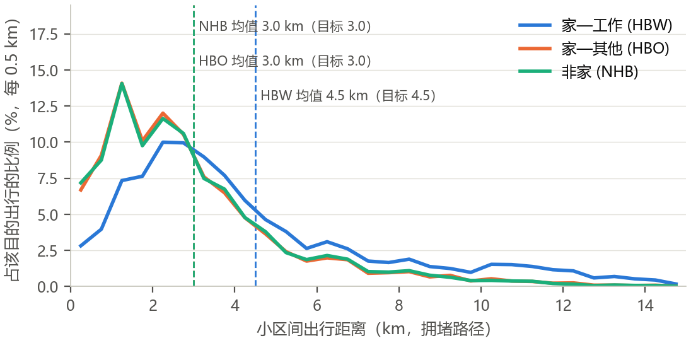
③ 方式划分（Mode split）
原理
标准做法是离散选择模型（多项 logit 或巢式 logit）：Pm = eVm / Σ eVk。效用 Vm 由时间、费用、方式常数构成。估计系数需要出行调查。没有调查就退而求其次：用固定分担率，或按距离分段的份额。
为什么不用 logit
西昌没有居民出行调查。任何效用系数都估不出来。借用其他城市的系数，常数项也无法校准。所以我用"固定总份额 + 按距离分配"：
所以总份额是情景输入。模型只决定它在哪里发生。车次 = 小汽车人次 / 1.4 载客率 + 出租人次 / 1.4 × 1.3 空驶系数。电动车 OD 单独输出，不分配到机动车路网。公交也不分配。
结果：1 km 内 73% 步行。2–6 km 电动车占 40%。小汽车份额 2 km 内 7%，8 km 以上 42%。电动车 1/3 与桂林 2017 调查的 33.2% 一致。慢行 65% 满足 GB/T 51328"中等城市 ≥ 60%"。
局限：分担率是全模型最不确定的参数（小汽车 11%–26%）。西南只有桂林一个参照。所以我用情景代替估计。
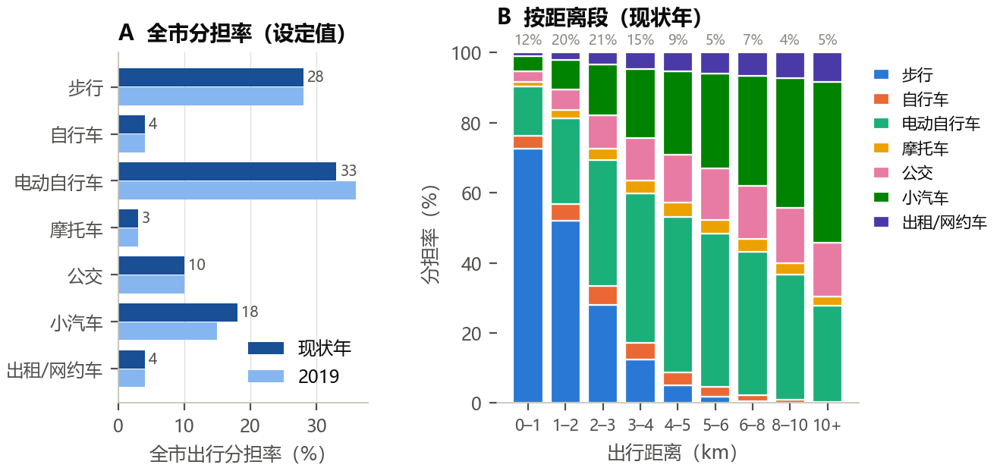
④ 时段划分与交通分配（Traffic assignment）
时段（Time of day）
我只分配早高峰小时。全日 PA 矩阵按出家 / 回家高峰比例合成早高峰 OD（HBW 出家 0.30、HBO 出家 0.12……）。再统一缩放，使人次加权早高峰比例 = 0.15。参照：宜兴 7–8 时 20.1%，美国 7.9%。全日流量 = 早高峰 / K。K 是全网早高峰车公里与全日车公里之比。这假定所有路段的日变化形态相同。
用户均衡（User Equilibrium, UE）原理
Wardrop 第一原理：均衡时，同一 OD 对所有被使用路径的时间相等。这个时间不大于任何未使用路径。没有人能单方面换路，降低自己的时间。Beckmann 证明它等价于一个凸优化问题：
BPR 路阻：ta(xa) = ta0 · [1 + α (xa / Ca)β] α = 0.15, β = 4 α、β 取 1964 年原始 BPR 值。NCHRP 716 表 4.26 显示，0.5–1M 都市区干道平均 α 0.42、β 5.2。我用这组值作敏感性高值。形心连杆 α = 0、β = 1，时间不随流量变化。
Frank–Wolfe 与双共轭 Frank–Wolfe
- 在当前流量 xn 下算 ta(xn)。做全有全无（AON）最短路分配，得辅助流 yn。
- 线搜索 λ ∈ [0,1]，最小化 Z(xn + λ(yn − xn))。
- xn+1 = xn + λ(yn − xn)。
经典 FW 在最优点附近锯齿，收敛慢。双共轭 FW（bi-conjugate, BFW）把下降方向与前两次方向做共轭组合。这大幅加速收敛。AequilibraE 的 bfw 41 次迭代就到 1e-4。TransCAD 4.5 的经典 FW 跑了约 300 次，停在 1.6e-4。
相对间隙（Relative gap）
反馈循环（Feedback）
出行分布用的时间应等于交通分配后的拥堵时间。所以我循环 3 轮。第 1 轮：自由流 skim → 重力 → 方式 → ToD → UE → 拥堵 skim。拥堵 skim 与上一轮做 MSA（method of successive averages）平均，再进第 2 轮。以此类推。早高峰小汽车 OD 的变化 RMSE 从第 2 轮 4.0% 降到第 3 轮 1.2%。
分配设置
4 个车种类（multi-class）：car、hinterland、ext_hub（pce 1）、ext_road（pce 1.5，货车多）。它们共用同一路阻函数，所以总 pcu 的均衡解唯一。算法 bfw，rgap 目标 1e-4。
结果：西昌早高峰长什么样
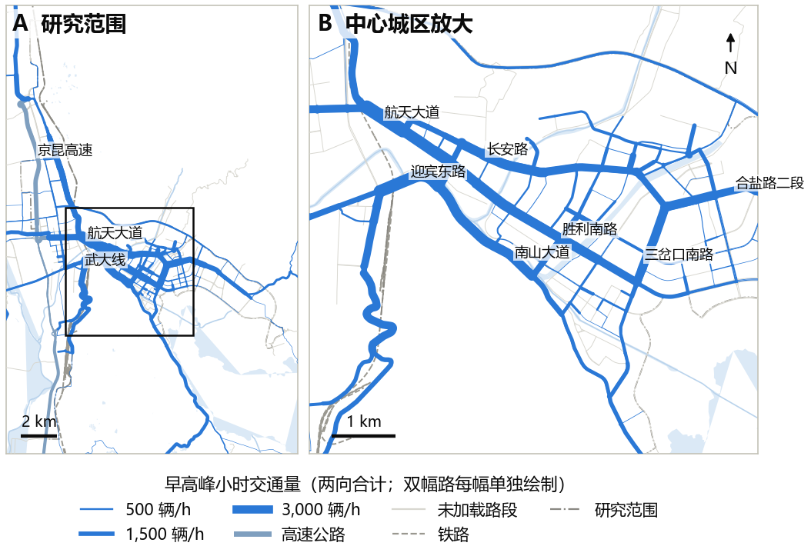
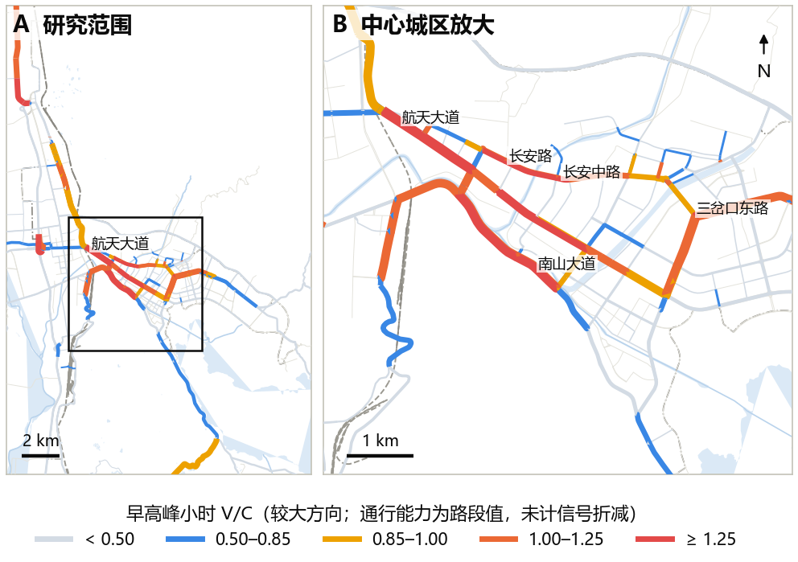
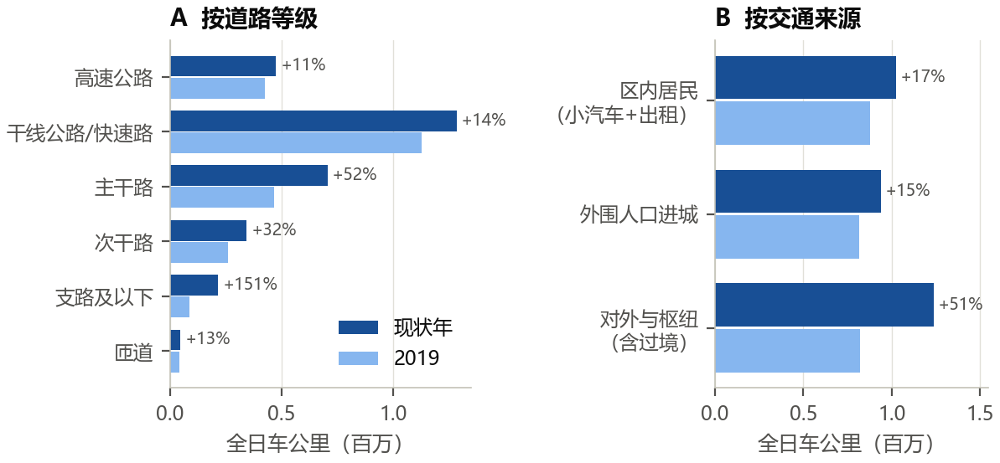
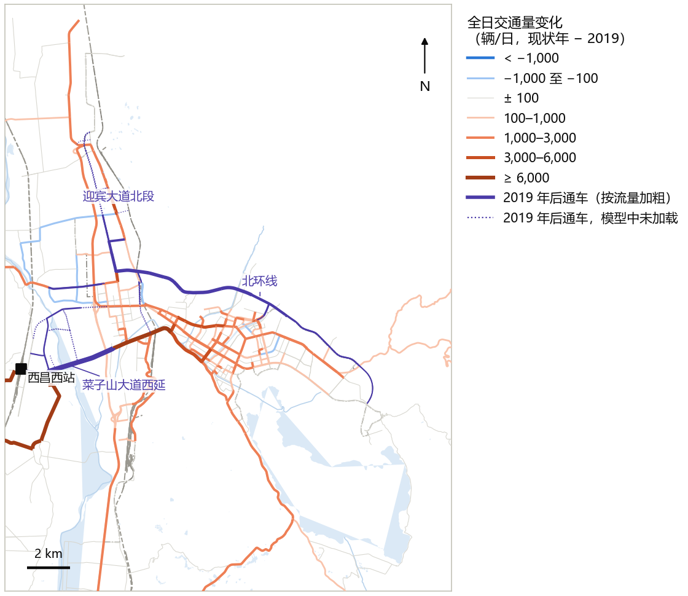
"I zoned the city into 52 internal and 14 external TAZs from a 100 m census grid. I coded an OSM network with capacity and speed by functional class. I generated trips with rates from national standards and small-city surveys. I distributed them with a doubly-constrained gravity model fitted to a target mean trip length. I applied distance-banded mode shares, because no survey existed to estimate a logit. I assigned the AM peak with bi-conjugate Frank–Wolfe user equilibrium to a relative gap of 1e-4. I fed congested times back to distribution three times. There were no counts, so I spent as much effort on sensitivity as on the base run."
- 所有行为参数都是借来的，来源是规范、宜兴 / 桂林调查、NCHRP 716。没有本地调查。
- 只模拟早高峰小时。小城市的午间回家高峰（宜兴 11–12 时 10.4%）没有模拟。
- 电动车（占 1/3 出行）和公交没有分配到路网。
- V/C 绝对值不可信，因为通行能力不含信号折减。只用于相对比较。
9 · AequilibraE 与 TransCAD：谁算的、谁复现的
主模型跑在 Python + AequilibraE 上：可复现、免费、能批量跑 47 次敏感性。TransCAD 4.5 是独立复现引擎（replication）：同样的输入换一个软件，流量是否相同？答案是相同，R² 0.9999。这说明分配结果不依赖软件实现。
AequilibraE 是什么
开源的 Python 交通需求建模库。功能有四块：网络 / 图（Graph）构建；最短路与阻抗矩阵（NetworkSkimming）；多车种静态交通分配（all-or-nothing、MSA、Frank–Wolfe、conjugate FW、bi-conjugate FW）；BPR 等路阻函数、选择路段分析（select-link）、OMX 矩阵格式。它相当于 TransCAD / Visum / Cube 的"分配引擎"。它没有 GUI，也没有现成的重力模型和方式划分。这两步我用 numpy 自己写。
项目中的角色
- 把
links.gpkg建成 AequilibraE 项目。现状、2019、2035 各建一个。 - 阻抗矩阵用 Graph。
set_skimming(["time","distance"])取时间和距离。set_blocked_centroid_flows(True)禁止路径穿过形心。 - 分配：每车种一个 TrafficClass。
set_vdf("BPR")读逐路段的 α / β 字段。set_algorithm("bfw")，rgap 目标 1e-4。 - 用 select-link 分析得到路口转向流量。VISSIM 用这些流量。
环境提醒：AequilibraE 需要 pandas 3。这和 geopandas 环境冲突。所以我把它单独放在一个 venv 里。流水线在两个解释器之间切换。
TransCAD 通用知识
- Caliper 公司的 GIS-based 交通规划软件。它是美国 MPO 的主流工具之一，与 Cube、Visum、EMME 并列。
- 数据结构：地理文件（.dbd）分线层和点层。线层端点自动生成节点层。网络（.net）由线层创建。它含方向字段（AB / BA 成对字段自动配对）、长度、时间、通行能力。矩阵（.mtx）含多个核心（core）和索引（index）。
- Centroid 形心：在 Network Settings 中指定形心节点选择集。路径不得穿过形心。这等价于 AequilibraE 的 blocked centroid flows。不设这项，结果会不同。
- 菜单路线：Networks/Paths → Create / Settings / Multiple Paths，得阻抗矩阵。Planning → Trip Distribution → Gravity Evaluation，双约束，阻抗可选 Exponential / Gamma / Power。Planning → Traffic Assignment，Method = User Equilibrium，设 Time 字段、Capacity 字段、Alpha / Beta、Iterations、Convergence。
- GISDK：TransCAD 的脚本语言（Caliper Script）。宏用
RSCC.EXE编译成 UI 数据库。用tcw.exe -a <ui> -ai "<macro>"从命令行启动。批处理过程用RunMacro("TCB Run Procedure", …)调用。它和菜单命令是同一套代码。
Python 流水线：一条命令
python scripts/run_all.py now 2019 [--sensitivity --lhs 20 --workers 4] [--set car_share=high ...]所有参数由 model_config.build_config(scenario, overrides) 解析成一个 JSON 字典。每个行为参数从 params.csv 取值。取值方式是 low / base / high 三档，或按 u ∈ [−1, 1] 分段线性插值。47 次敏感性运行复用完全相同的代码。
TransCAD 复现：怎么做的
tc45_run.py --scenario now 一条命令，分五步：
- prep：整理成
links.shp，含 1,500 路段 + 133 形心连杆，字段有 T_AB / T_BA、CAP_AB / CAP_BA、ALPHA、BETA 等。再整理pa.dbf和od_fixed.dbf（66 × 66 格），生成参数宏。单行路段设 T_BA = 9,999 min、CAP_BA = 99,999。原因是 GISDK 4.5 写不了拓扑 Dir 字段。 - compile：
RSCC.EXE把 GISDK 宏编译成 UI 数据库。 - assign：运行
tcw.exe -q -a xc_ui -ai "XC Assign Only"。约 30 秒，自动退出。 - full：运行
"XC Full Chain"。TransCAD 自己跑重力 + 方式 + 分配。 - collect：收集 CSV。合并路段 ID 对照表。出对比图和数字宏。
GISDK 宏做了什么
- Build Network：
ImportArcViewShape导入 shp。按连杆识别形心节点。CreateNetwork带时间、容量、α、β 字段。ChangeNetworkSettings启用 Centroids。 - Skim：Multiple Paths 最小化自由流时间。与 Python 核对，差 ≤ 0.005 min。
- Assign：
TCB Run Procedure "Assignment"。Load Method 5 = UE，Convergence 0.0001，Iterations 500。 - Full Chain：Gravity 每个目的单独调用一次。原因是 4.5 一次跑三个目的时 HBO 为空，这是测试中发现的。设置为 Double constraint、Exponential 阻抗，c 取 Python 标定值。TransposeMatrix 得回程。Matrix Fill 合成早高峰小汽车 OD，再跑 UE。
复现结果
验收标准事先定好：R² ≥ 0.99、%RMSE ≤ 5%、GEH < 5 的比例 ≥ 95%、pcu-km 差 ±1%。
| 指标 | 仅分配（同一 OD） | 全链（TransCAD 自己做重力 + 方式） |
|---|---|---|
| R² | 0.9999 | 0.963 |
| 过原点斜率 | 1.000 | 0.813 |
| %RMSE | 1.7% | 51.5% |
| GEH < 5 | 99.7% | 80.8% |
| pcu-km 差异 | +0.02% | −13.8% |
| 相对间隙 | 1.6e-4（经典 FW 约 300 次后停止下降） | 2.9e-4 |
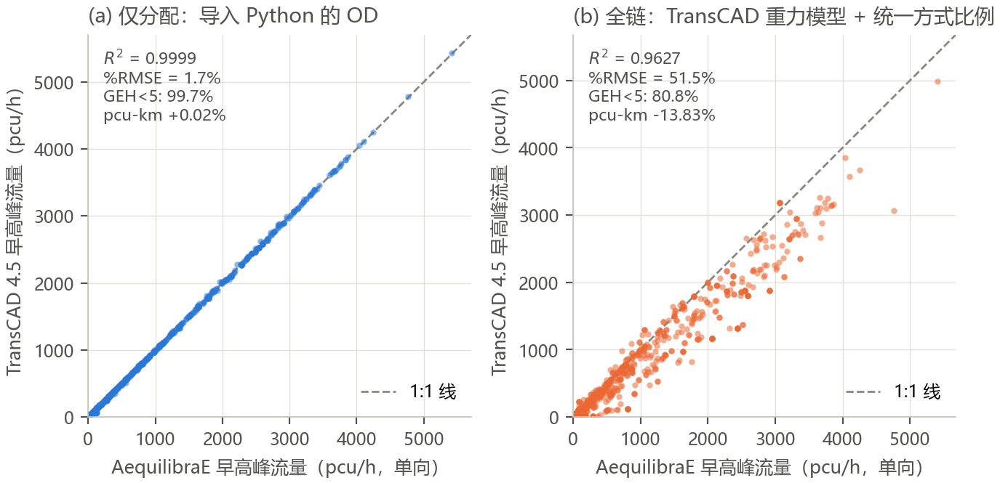
为什么仅分配 0.9999，全链只有 0.963
- 仅分配：两边的 OD、路网、路阻函数完全相同。差异只来自算法和收敛。TransCAD 经典 FW 停在 1.6e-4，AequilibraE BFW 到 0.9e-4。差异集中在低流量路段。三项中间检查一致：自由流 skim 差 ≤ 0.005 min；无车流穿越形心；单行反向流量为零。
- 全链：TransCAD 版有两处有意简化。一是方式划分不按距离分段，用统一比例。二是没有分布—分配反馈。统一比例使早高峰小汽车车次减少 7%，短途比例上升。所以 pcu-km 低 13.8%。
- 另一个技术原因在阻抗矩阵。导出的阻抗矩阵是最后一轮反馈 MSA 平均之后的。Python 最后一轮分布用的是平均之前的。HBO / NHB 的 β 大，对阻抗敏感，分布矩阵差 20%。HBW 只差 1%。我用同阻抗、同 β 的 numpy Furness 核对 TransCAD 重力，逐格差 ≤ 0.005 人次。这说明重力模型实现本身一致。
- 结论：结果不依赖软件实现。Python 模型中的分距离方式划分和反馈对路段流量有实质影响。它们不是可忽略的细节。我把差异原因写进报告，不只报 0.9999。
"I used TransCAD 4.5 as the replication engine. A GISDK macro builds the network with a centroid set. It then runs Multiple Paths, Gravity and UE Assignment. I compiled it with RSCC and launched it from Python, so the whole run is one command. Assignment-only replication matched AequilibraE to R² 0.9999. The full chain matched less well, R² 0.96. That is because I simplified mode split and dropped feedback in the TransCAD version on purpose. I documented why instead of hiding it. The version is old. But the concepts carry straight over to TransCAD 9/10, Cube or Visum: network layer, centroid set, UE dialog."
10 · 没有计数怎么"验证"：合理性检查、47 组敏感性、复现
没有流量计数，怎么检验模型？答案分三层。合理性检查：中间量是否落在同类城市和规范范围内。敏感性：47 次完整运行，看结论是否稳健。复现：TransCAD 独立重算。需要说明：这不是 validation。
FHWA 手册的三个概念
《Travel Model Validation and Reasonableness Checking Manual, 2nd ed.》（Cambridge Systematics for FHWA / TMIP, 2010）区分三个概念：
西昌没有计数和调查。所以本项目只做后两类。我明确不叫它 validation。
第一层：合理性检查
| 步骤 | 指标 | 模型 | 参照 | 判断 |
|---|---|---|---|---|
| 生成 | 人均日出行 | 2.5 | 2.1–2.8 | 合理（构造使然） |
| 户均日出行 | 6.5 | 5.5–7.3 | 合理 | |
| HBW / HBO / NHB | 40 / 50 / 10 | 35–45 / 45–55 / 5–15 | 合理（输入） | |
| 分布 | HBW 平均距离 | 4.5 km | 3.5–5.5 | 合理（标定目标） |
| HBO / NHB 平均距离 | 3.0 / 3.0 | 2–4 / 2–4.5 | 合理 | |
| 区内出行 | 7.5% | < 15% | 合理 | |
| HBW 小汽车时间 | 8.4 min | 13.6–22（门到门） | 注意 | |
| 方式 | 慢行合计 | 65% | ≥ 60% | 合理 |
| 步行平均距离 | 1.57 km | 0.8–1.5 | 注意 | |
| 电动车平均距离 | 4.0 km | 4.0–7.0 | 合理 | |
| 分配 | 人均居民小汽车 VKT | 2.18 km/日 | 1–6 | 合理 |
| V/C > 1 加载里程 | 6.8% | < 10% | 合理 | |
| 相对间隙 | 8.9e-5 | ≤ 1e-4 | 合理 | |
| 末轮反馈 OD 变化 | 1.2% RMSE | < 5% | 合理 |
第二层：47 组敏感性
13 个参数：出行率、目的结构、小汽车份额、高峰小时比例、过境比例、BPR α、BPR β、通行能力档、对外交通量、出行距离目标、载客率、G5 下道比例、外围进城比例。
- OAT（one-at-a-time）：每次只改一个参数，取低或高，其余保持基准。共 13 × 2 = 26 次。用它看单个参数影响的方向和大小（龙卷风图）。
- LHS（Latin hypercube sampling）：13 个参数同时抽样 20 次。做法是每一维分成 n 层，每层抽一个点，层内随机，再随机配对。它比简单随机抽样用更少样本覆盖参数空间。用它看参数联合变化时结果的区间。
- 加上基准，共 47 次完整四阶段运行（含反馈）。多进程 4 workers。
Spearman 秩相关
结果
- 对总 VKT 影响最大的参数：对外交通量 −15% / +19%、小汽车份额 −15% / +16%、外围进城比例 ±12%，然后是出行率、出行距离。LHS 下总 VKT 的 5–95% 区间是 2.59–3.71 百万（−19% / +16%）。最重要的三个参数中，两个和研究范围外的交通有关。那正是数据最弱的地方。
- 对拥堵指标（V/C > 1 比例）影响最大的参数：通行能力（13.8%–2.4%）、高峰小时比例。它们几乎不改变 VKT。BPR 参数和过境比例对两者影响都小。
- 排名稳定性：基准最忙的 25 条路段中，14 条在 ≥ 80% 的运行中保持前 20。前 15 走廊中，14 条在 ≥ 80% 的运行中保持前 15。
- 政策含义：要缩小暴露量的不确定性，最有效的办法是分车型断面计数。地点在出入口和主要入城走廊。这些计数组成围绕研究范围的 cordon line。它们同时约束对外量、外围比例、小汽车份额。
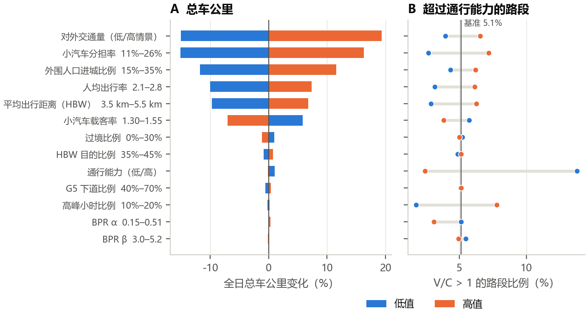
1 路段比例。">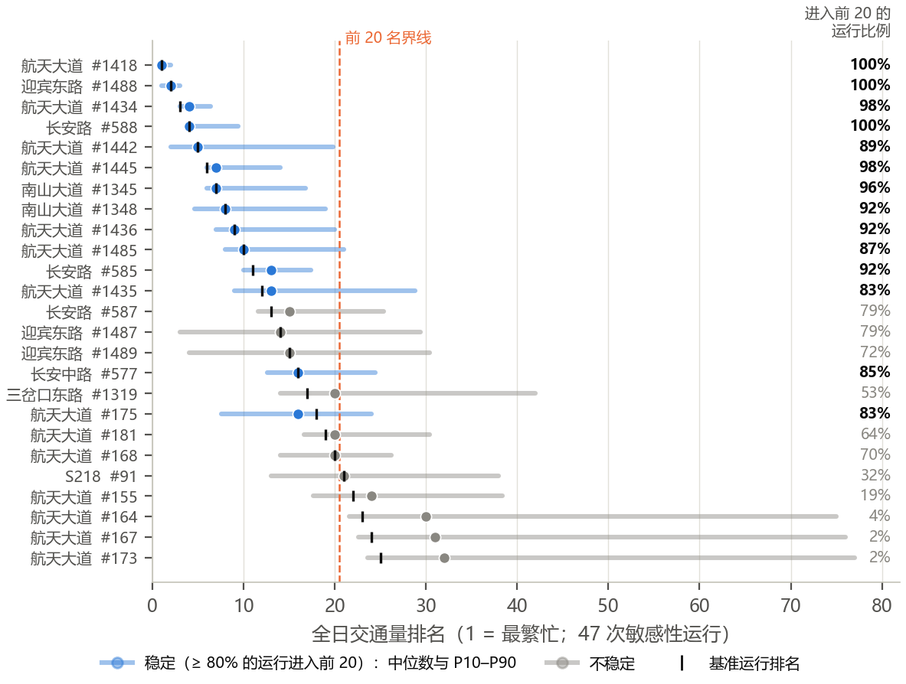
第三层：TransCAD 复现
同一 OD 在 TransCAD 4.5 中分配，R² 0.9999。详见第 9 节。
进行中：高德速度验证
没有计数时，行程时间是唯一免费可得的独立观测。高德交通态势 API 不对新用户开放。所以我用驾车路线规划 API 探测 40 条双向路线，长 1.2–4 km。路线包括 G5、航天大道、武大线、海滨中路、南山大道等。每天 24 个时段：早晚高峰每 15 分钟一次，再加 14:00、23:00 对照。计划跑 14 天。
检验事先固定：算观测的高峰 / 深夜行程时间比与模型 V/C 的 Spearman 秩相关。再单独检查航天大道、南山大道、长安路在观测中是否也最慢。判读标准：ρ ≳ 0.4，p < 0.05，且高 V/C 走廊在观测中最拥堵 → 相对拥堵判断通过。否则 V/C 排序不可靠。这仍不是流量验证，只验证相对拥堵。
"Three layers. First, reasonableness. I checked per-capita VKT, trip length, mode shares, intrazonal share and V/C distribution. I compared them with comparable cities and NCHRP 716 ranges. Second, sensitivity. I made 47 full runs: 26 one-at-a-time and 20 Latin hypercube over 13 parameters. Link rankings had a median Spearman of 0.99. So I only report findings that hold across all runs. Third, replication. The same inputs in TransCAD reproduced the volumes to R² 0.9999. It is a sketch-level model. It is for ranking and scenario differences, never for absolute volumes. In an agency I would add screenline counts and %RMSE by volume class per the FHWA manual. I would also add a household survey for trip rates."
11 · 暴露调整：SPF、经验贝叶斯，结论怎么翻过来的
我有 2019 年每条路段的车公里（VKT）。有了它，就能做美国 HSM 的标准动作。第一步，按道路等级拟合安全性能函数 SPF。SPF 根据交通量预测这类路"应该"有多少事故。第二步，用经验贝叶斯 EB 给观测值和预测值加权，得到"超额事故"（PSI）。第三步，重新回答一个问题：过境干道是真的危险，还是只是车多？
事故匹配到 2019 路网
我把 9,384 个碰撞 / 追尾 / 翻车点吸附到 2019 模型路网。规则有三条。30 m 内的路段算候选。25 m 内有 ≥ 3 条邻接路段的，算交叉口事故，归到等级最高的进口路段。路中事故取最近路段。结果：57% 落在模型路段（5,380 起）。20% 在支路小巷。22% 离任何道路 > 30 m。事故坐标很粗，只有 1,992 个不同坐标。所以分析单位是走廊。走廊是同名路段合并，无名国省道按编号合并。640 条路段有流量。它们承载 4,342 起事故，年约 878 百万车公里。182 条走廊中，年 MVKT ≥ 1 且长度 ≥ 0.5 km 的有 48 条。这些走廊进入排名。
SPF：负二项回归
原理：SPF 是安全性能函数（Safety Performance Function）。它是 HSM 的核心。给定道路类型和暴露量，它预测期望事故数。事故数是过度离散的计数，所以用负二项回归（NB2）：
μi = exp(β0) · MVKTiβ1 ⇔ ln μi = β0 + β1 ln MVKTi MVKT = 日 VKT × 365 / 10⁶ β1 是事故对暴露量的弹性。文献中城市干道通常 0.6–1.0。< 1 表示"安全在数量中"：车多时车速低，驾驶员更警觉。k 是过度离散参数。k 越大，越离散。
| 等级 | 路段 | 事故 | MVKT/年 | β1（s.e.） | k |
|---|---|---|---|---|---|
| 高速 | 26 | 69 | 169 | 0.26 (0.42) | 33.6 |
| 国道 / 快速路 | 230 | 1,634 | 413 | 0.45 (0.07) | 5.5 |
| 主干路 | 70 | 360 | 170 | 0.43 (0.23) | 9.3 |
| 次干路 | 165 | 1,256 | 95 | 0.31 (0.08) | 4.9 |
| 支路及匝道 | 149 | 1,023 | 32 | 0.00 (0.05) | 4.9 |
弹性远低于 1，有三个原因。它们分不开。第一，模型流量有测量误差，弹性向零衰减（attenuation bias）。第二，事故坐标粗糙，很多事故归到地标所在的路段。第三，真实关系就是非线性的。所以我不解释 β1 的大小。我只把 SPF 当作"同等级、同交通量的预期基准"。
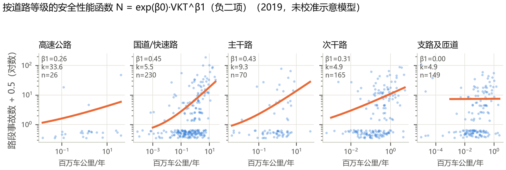
经验贝叶斯与 PSI
原理（Hauer 1997；HSM 第 4 章）：观测事故数有随机波动。它还受回归均值影响：一年事故多的地点，次年会自然回落。EB 按可靠性给观测值和 SPF 预测值加权：
NEB = w · μ + (1 − w) · Nobs
Excess（PSI, potential for safety improvement）= NEB − μ μ 越大或 k 越大，w 越小。w 越小，越信观测值。PSI 回答一个问题："这条路比同等级、同交通量的路多出多少事故？"这部分正是工程措施能减少的。HSM 的网络筛选（network screening）推荐按 EB 超额排序。不按事故数，也不按事故率。
三种筛选口径
| 口径 | 优点 | 缺点 |
|---|---|---|
| 事故数 | 直观 | 自动偏向大流量道路 |
| 事故率（起 / 百万车公里） | 纠正暴露量 | 走向另一个极端。短小街道几十起事故，暴露量极小，事故率虚高（文汇路 55.7、风情园路 39.7）。而小暴露量正是没有用流量计数校准的模型最不可靠的地方 |
| EB 超额 | 结合两者，抑制小样本 | 本数据 k ≈ 5 很大。EB 超额 ≈ 观测 − 预测 |
过境干道检验：网格模型前后对比
这张卡检验"过境干道危险"是否成立。我先在 250 m 网格（619 格）原样复现第一阶段的模型：事故 ~ ln(1 + POI)。系数和 33 个超额网格完全一致。然后我加入两个变量：ln(1 + 日 VKT / 1000)，以及"网格内无模型路段"虚拟变量。最后我加入"过境干道"虚拟变量，看它的 IRR（incidence rate ratio，发生率比）：
| 仅 POI | + ln(VKT) | 47 次运行范围 | |
|---|---|---|---|
| ln(1 + POI) 弹性 | 0.65 (0.04) | 0.53 (0.05) | — |
| ln(1 + VKT/1000) 弹性 | — | 0.53 (0.10) | 0.46–0.62 |
| 对数似然 | −1,650.1 | −1,599.6（+50.6） | — |
| 超额网格 z > 2 | 33（1,484 观测 / 204 预期） | 25 | 23–26 |
| 原 33 个仍 z > 2 | 33 | 18 | 18–19 |
| 其中在过境干道 | 13 | 8 | — |
| 过境干道虚拟变量 IRR | 2.68（p < 10⁻⁶） | 1.22（p = 0.28） | 1.19–1.28；p 0.18–0.34 |
三层结论：(1) 交通量本身解释力强。POI 弹性下降。第一阶段归于"活动"的一部分，其实是车流。(2) "过境干道"作为类别不显著了。47 次运行中它都不显著。(3) 具体地点的超额仍在。例子是武大线、航天大道、丹桂桥的若干网格。风险属于地点，不属于道路类别。
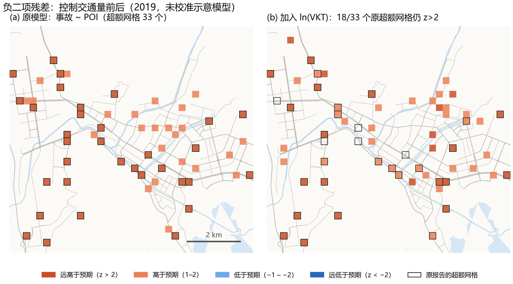
排名变化：谁上去了，谁下来了
三种排名的 Spearman 相关：数—率 0.63，数—EB 0.58，率—EB 0.60。事故数前 15 和 EB 前 15 只重合 9 条。有 9 条走廊在 ≥ 80% 的运行中稳居 EB 前 10：武大线、合盐路二段、长安路、长安中路、文汇路、海滨中路、G348 无名段、S219 无名段、长安东路。
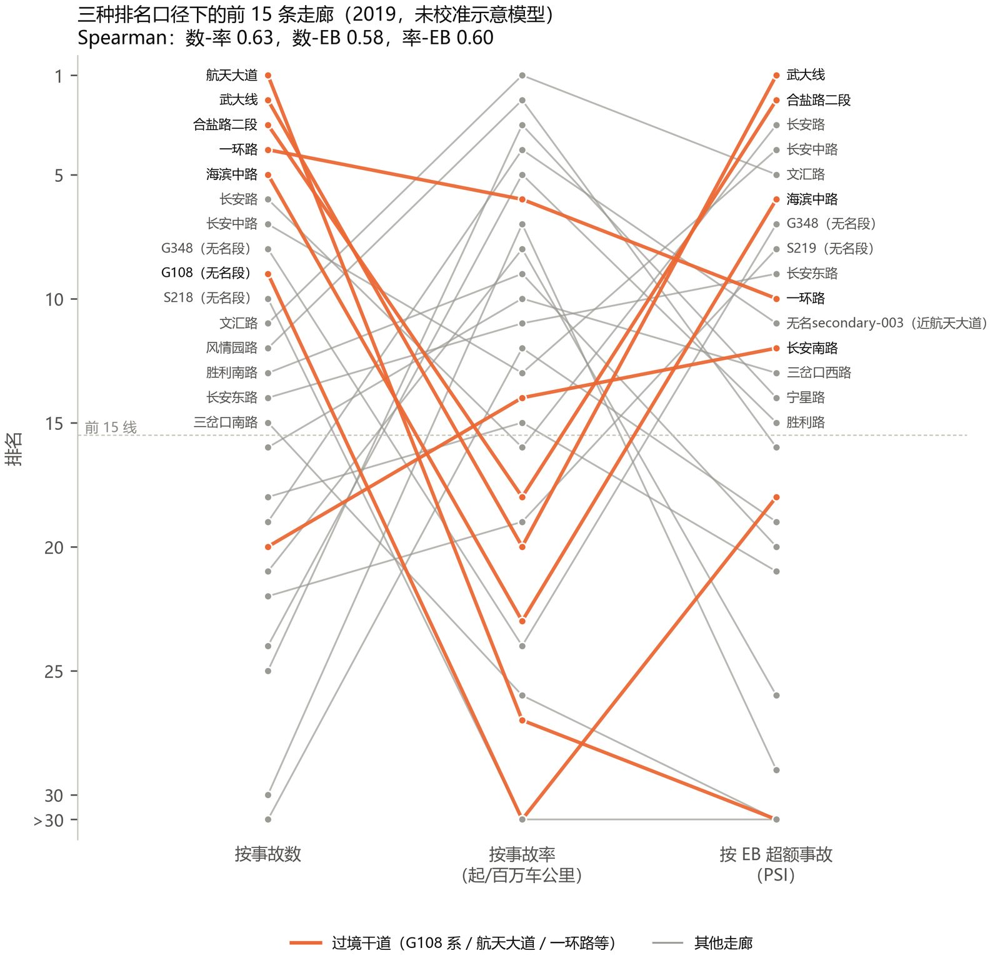
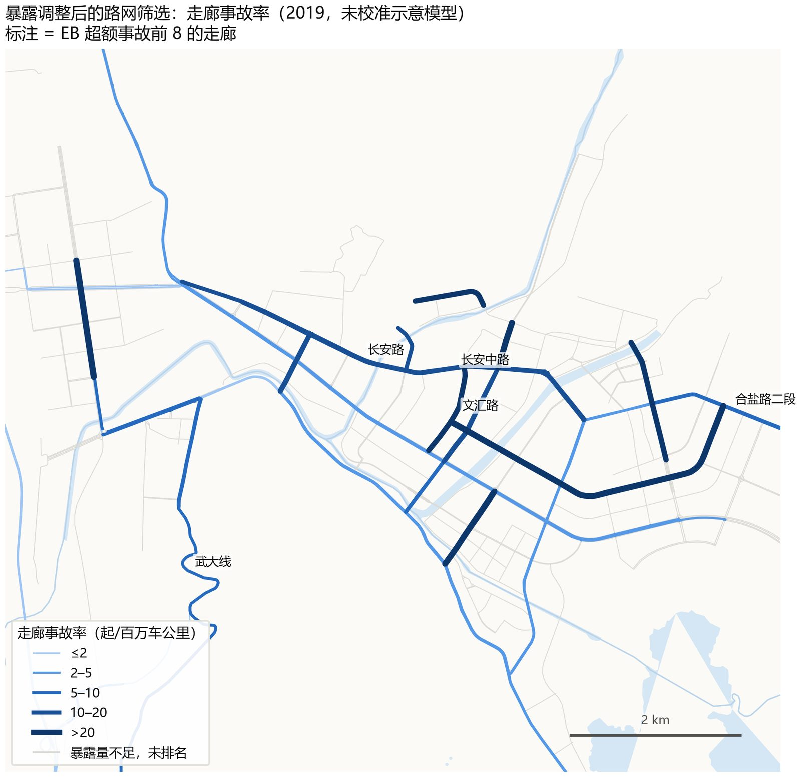
风险杠杆有依据的地方：武大线、合盐路二段、长安路系。措施是几何设计、接入管理、中央隔离、路口渠化。优先做道路安全审计。主要是暴露量的地方：航天大道和过境干道整体。措施是分流过境车和货车、需求管理、弱势出行者过街设施和限速。残留的超额网格按点位处理。
"The through-arterial rate ratio fell from 2.68 to 1.22. It lost significance. Hangtian Avenue has the most crashes. But it ranks 48th by empirical-Bayes excess. The reason is simple: it carries the most vehicle-kilometres. Three roads are riskier than their traffic predicts: Wuda Line, Heyan Road and the Chang'an Road corridor. They stay at the top in all 47 runs. So engineering treatments go there. The high-count arterial needs demand management and vulnerable-user protection instead."
- 流量来自示意级模型，没有用流量计数校准。它只覆盖机动车。电动车没有分配。
- 全日流量由早高峰按统一比例换算。
- SPF 用同一批数据拟合。它是参照组，不是 HSM 意义上的本地校准 SPF。k ≈ 5 使 EB 权重几乎全在观测值。
- 只有一年数据。回归均值无法完全排除。
所以排名适合"决定先审计哪里"。它不直接决定投资。
12 · 2035 情景：增长在哪里，政策能抵消多少
长期预测通常要两样东西：规划的人口 / 就业分配，以及规划路网。西昌只有国土空间总体规划的草案公示稿和人口规划。它没有中心城区用地结构、就业目标和道路系统规划图。所以这不是"预测"。这是约束下的增长情景（growth scenarios under constraints）。结论只用于情景之间的比较。
情景设定
人口三档
中心城区 60 / 70 / 85 万人。85 万的算法：开发边界 85.79 km² ÷ 人均 100 m²。现状 47 万，所以新增 13 / 23 / 38 万人。
分配规则："水填法"
- 按规划的"西进、南拓、北提、东控、中优"分五组，各给权重。西 1.0（含新增的 53 号高铁新城小区，9.9 km²）。北 1.0（安宁走廊）。南 0.8。中 0.5（老城）。东 0.25。
- 容量：增长片区毛密度上限 1 万人/km²。老城 +10%。东部 +5%。
- 新增人口 ∝ 权重 × 剩余容量。溢出的人口再分配。基准情景结果：西 54%、北 31%、南 10%、老城 5%、东 0%。高情景用掉总容量的 92%。这说明 85 万接近上限。
其他假设
- 吸引量：POI 随人口增长，按现状人均分类 POI 算。各片区职住比不变。我没有把产业园当作独立就业中心。
- 路网："十四五"市政道路大多已建成。真正新增的是绕城高速。几何来自 OSM construction 图层：双向 4 车道，49.7 km，4 处互通。三处立交的做法：300 m 内 34 条路段通行能力 × 1.3。
- 小汽车份额 18% → 20 / 24 / 28%。对外交通年增 1.5 / 2.5 / 3.5%，共 10 年。
- 政策对照：在 2035 基准上，小汽车份额 −5 个百分点（24 → 19%）。一半转给公交，一半转给电动车。
结果
| 现状 | 2035 低 | 基准 | 高 | 政策 | |
|---|---|---|---|---|---|
| 人口（千） | 470 | 600 | 700 | 850 | 700 |
| 小汽车份额 | 18% | 20% | 24% | 28% | 19% |
| 小汽车车次（千/日） | 195 | 269 | 360 | 494 | 298 |
| 日 VKT（百万） | 3.20 | 3.88 | 4.56 | 5.46 | 4.10 |
| 较现状 | — | +21% | +42% | +70% | +28% |
| 人均居民小汽车 VKT（km/日） | 2.18 | 2.35 | 2.59 | 2.81 | 2.19 |
| V/C > 1 路段长度（km） | 34 | 28 | 48 | 80 | 32 |
| 干道期望事故（拟合弹性 / 正比） | — | +5 / +11% | +13 / +28% | +22 / +47% | +7 / +15% |
| 干道事故成本变化（亿元/年） | — | 0.11–0.72 | 0.29–1.83 | 0.47–3.03 | 0.15–0.95 |
- 空间格局：增长在西、北。菜子山大道 1.1 万 → 2.3 万辆/日。宁远大道西延 ≈ 0 → 6,500。G5 全线 +55%。武大线 +40%。老城走廊持平或下降。长安路、三岔口南路、一环路在 ±5% 内。航天大道 +9%。合盐路二段 −3%。原因有两个。新增人口在老城外。绕城高速西段（约 1.1 万辆/日）分走了穿越老城北部的车流。
- 低情景 V/C > 1 里程比现状还低（28 vs 34 km）。原因：绕城高速和立交增容抵消了需求增长。新瓶颈有三处：宁远大道西延进老城的入口、G5 西昌北匝道、航天大道北段。
- 政策情景：小汽车份额 −5 个百分点。VKT 增幅从 42% 降到 28%。V/C > 1 里程 32 km，回到现状水平。航天大道 +9% → +1%。南山大道 +19% → +6%。干道事故增量避免约 48%。每年避免事故成本 0.14–0.88 亿元。
事故换算方法：用第 11 节按等级的 SPF（β1 0.31–0.45）。对现状有流量的 626 条干道路段算期望事故。给两个界：拟合弹性，以及 β1 = 1 正比。成本算法：第一阶段 2019 事故成本 5.8–17.3 亿元/年 × 干道事故份额 37% × 百分比变化。
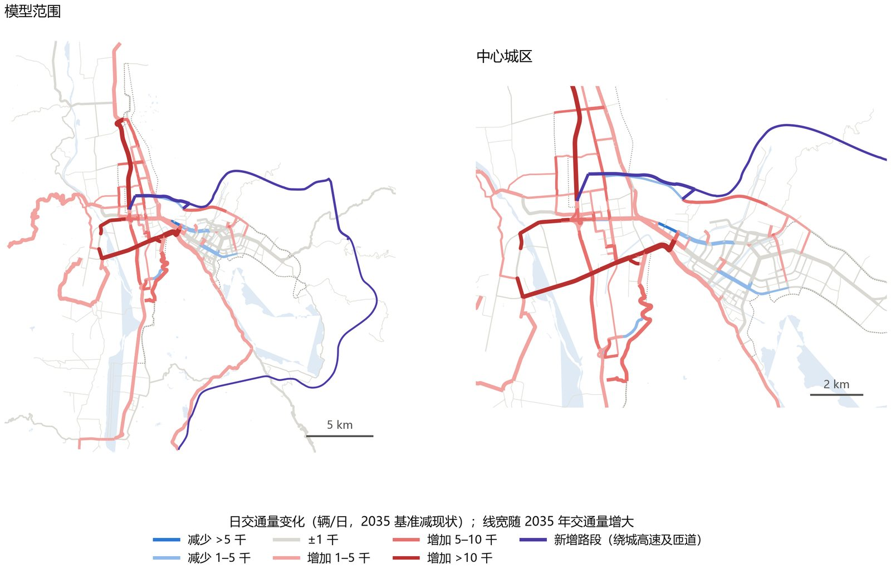
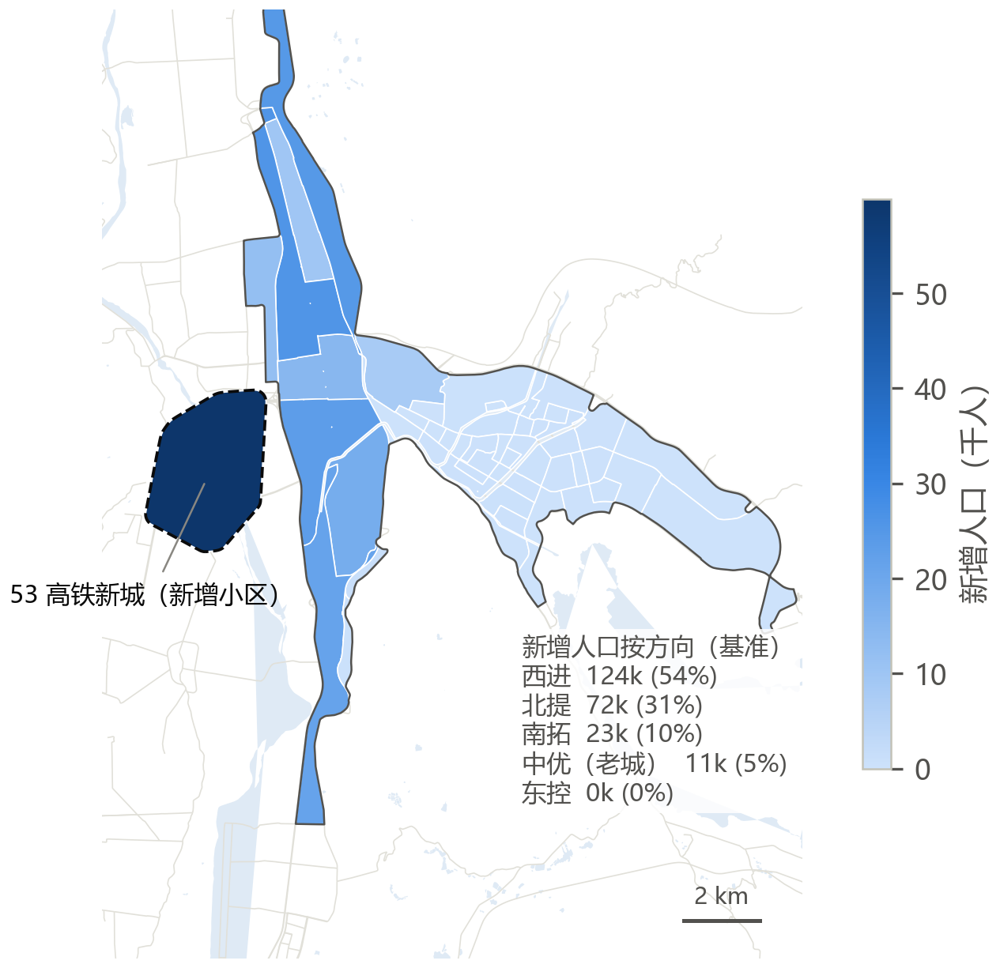
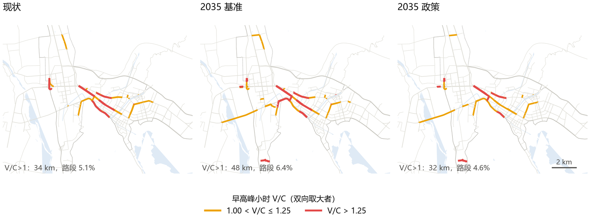
1 路段：现状、2035 基准、2035 政策三面板。">"I test 2035 population scenarios of 600 to 850 thousand. Vehicle-kilometres rise 21 to 70 percent. Growth concentrates in the west and north, where the plan directs development. A five-point cut in car mode share avoids about half the predicted increase in arterial crashes. It also brings over-capacity mileage back to today's level. I present these as constrained growth scenarios, not forecasts. There is no land-use plan or employment target for the city centre."
13 · VISSIM 微观仿真 + SSAM：最差路口的两套信号方案
四阶段模型是静态宏观模型。它看不到信号、排队、左转抢间隙。所以我对一个路口往下钻。VISSIM 逐车、逐 0.1 秒模拟。FHWA 的 SSAM 再从轨迹里数"险情"，也就是冲突。本节先讲它模拟了什么、为什么，再讲怎么搭建。
为什么是航天大道 × 胜利南路
这张卡讲选点依据。三个条件同时满足：
- 第一阶段交叉口排名第 1，共 77 起。其中碰撞 42 起，追尾 33 起。第 2 名只有 36 起。
- 暴露量没有解释掉。它的东南进口路段 EB 超额 +70 起。这约是 SPF 预测的 13 倍。在 640 条有流量路段中排第 6。而航天大道整条走廊的超额是负的。所以风险集中在这个节点，不在走廊。
- 它是中心城区的平面信号交叉口。工程上可以操作。
这是"宏观 → 中观 → 微观"链条的收口。需求模型说：航天大道整体只是车多。EB 说：但这个路口除外。VISSIM 回答：这个路口能怎么改。
VISSIM 原理
微观仿真
微观仿真逐车、逐时间步模拟，本项目每秒 10 步。它模拟每辆车的加减速、换道、让行。它能表现信号、排队、交织等瓶颈。这些瓶颈静态宏观模型看不到，所以两者互补。
Wiedemann 跟驰模型（心理—生理模型）
跟驰模型描述驾驶员怎么跟前车。驾驶员根据距离和速度差在四种状态间切换：自由行驶（free driving）、接近（approaching）、跟驰（following）、制动（braking）。驾驶员不能精确保持距离。他会在感知阈值之间来回，这叫"跟驰振荡"。
- Wiedemann 74（城市）：三个参数。ax 是平均停车间距，默认 2 m。bx_add 是安全距离附加项，取 2。bx_mult 是乘法项，取 3。期望安全距离 d = ax + (bx_add + bx_mult · z) · √v。饱和流率主要由这三个参数决定。可以按 1,600–1,800 pcu/h/车道调。
- Wiedemann 99（高速 / 城际）：10 个参数，更细。例如 CC0 是停车距离，CC1 是车头时距，CC2 是跟驰变化。
- 本项目机动车用 W74 "Urban (motorized)"。电动车路段用 "Cycle-Track (free overtaking)"，可以并排超车。
换道（lane change）
换道分两种。必要换道是为了走路径，自由换道是为了更快。参数：最大减速度、可接受减速度、等待时间、前后安全距离因子。等待时间默认 60 s，超过就被移出路网。现状方案 17 辆车被删除，就是这个机制。
冲突区（Conflict Areas）vs 优先规则（Priority Rules）
| 优先规则 | 冲突区 | |
|---|---|---|
| 定义方式 | 在路段上手工放停止线和冲突标记 | VISSIM 在路段或连接器重叠处自动生成，默认被动（黄色）。用户设谁优先：红让绿 |
| 参数 | 最小间隙时间、最小车头空距 | 前间隙（front gap）、后间隙（rear gap）、安全距离因子、可见性 |
| 行为 | 让行车在停止线前判断 | 让行车预判主路车到达。它可以在冲突区内等间隙。许可左转就是这种行为 |
| 推荐 | 精细可控，但繁琐 | VISSIM 5.x 之后推荐。本项目全部用冲突区 |
信号、种子、评价
- 定时信号：VisSig .sig 文件定义信号组、相位、周期、绿信比。信号灯头放在每条车道的停车线。学生版不能外接感应控制。
- 随机种子：车辆到达、期望车速、驾驶员参数都随机抽取。所以一次运行只是一个样本。本项目每方案跑 20 个种子。我以种子为样本做统计检验。前 120 s 是预热期，不计入。
- 评价指标：节点评价给出各转向流量、平均延误、停车次数、排队。另有行程时间段、延误段、数据采集点。
- Webster 配时：周期 C0 = (1.5 L + 5) / (1 − Y)。Y = Σ yi，即各相位关键车道流量比 q/s 之和。L 是总损失时间。有效绿 gi = (C − L) · yi / Y。本项目饱和流率 1,700 pcu/h/车道，每相位损失 4 s。
SSAM：用"险情"代替事故
SSAM 是替代安全评估模型（Surrogate Safety Assessment Model）。它由 FHWA 开发（Gettman & Head 2008）。它读微观仿真的轨迹文件 .trj，识别车辆对的"冲突事件"，算替代安全指标。逻辑是：事故很少，仿真里不会发生事故。所以用"差一点撞上"代替。
- TTC（time to collision）：碰撞时间。假设两车保持当前速度和方向，TTC 是到碰撞的时间。最小 TTC ≤ 阈值就记为冲突。默认阈值 1.5 s。
- PET（post-encroachment time）：先到车离开冲突点，后到车到达冲突点，中间的时间差。阈值 ≤ 5 s。
- 还有 MaxS、DeltaS、DR、MaxDeltaV 等严重度代理指标。
- 冲突角度分类：按两车航向夹角分。< 30° 是追尾（rear-end）。30–85° 是变道（lane-change）。> 85° 是交叉（crossing）。SSAM 默认 crossing 阈值 80°，本项目改为 85°。
- 常规清洗：剔除 TTC = 0 的记录。这些是车辆外廓已重叠的仿真伪冲突，占 84–88%。剔除预热期。按每千辆进入车辆标准化。
SSAM 冲突不等于事故。它的用途是：看方案减少的冲突类型，是否对应该路口的主要事故类型。
本项目怎么搭
软件是 VISSIM 5.30 学生版。限制：路网 ≤ 1 km × 1 km，每次 ≤ 600 s，≤ 10 个信号机，无行人，无 COM 接口，有水印。没有 COM 就不能用 Python 驱动。但 .inp 是文本文件。所以整个路网由脚本生成。


结果
先做合理性检验
改善方案通过检验。机动车通过量为需求的 96%。12 个转向中 GEH > 5 的为 0。现状方案没有通过。通过量只有 63%。7 个转向 GEH > 5，最大 17.4，在航天大道西北左转。17 辆车等待换道超过 60 s，被移出。约 1/3 需求没进路口。所以比较偏向现状方案。现状的劣势是下限。
延误
机动车平均延误 62.7 → 38.5 s/veh（−39%，p < 0.001）。同时改善方案多放行 52% 机动车。左转延误从 120–170 s 降到约 50 s。代价是胜利南路东北直行延误略增。
冲突
| 类型 | 现状 / 千辆 | 改善 / 千辆 | 变化 | p |
|---|---|---|---|---|
| 交叉 crossing | 15.03 | 3.16 | −79% | < 0.001 |
| 变道 lane-change | 5.52 | 2.70 | −51% | 0.060 |
| 追尾 rear-end | 183.45 | 184.74 | +1% | 0.148 |
| 合计 | 204.01 | 190.59 | −7% | 0.379 |
解读：保护左转去掉了该路口的主要事故类型。77 起事故中 42 起是碰撞，对应交叉冲突。每车交叉风险降约 4/5。追尾冲突占九成以上。它随通过量成比例增加，每千辆不变。所以信号相位改变的是冲突的类型，不是排队带来的追尾暴露量。要减追尾需要排队措施：加长左转展宽、排队预警、协调控制。
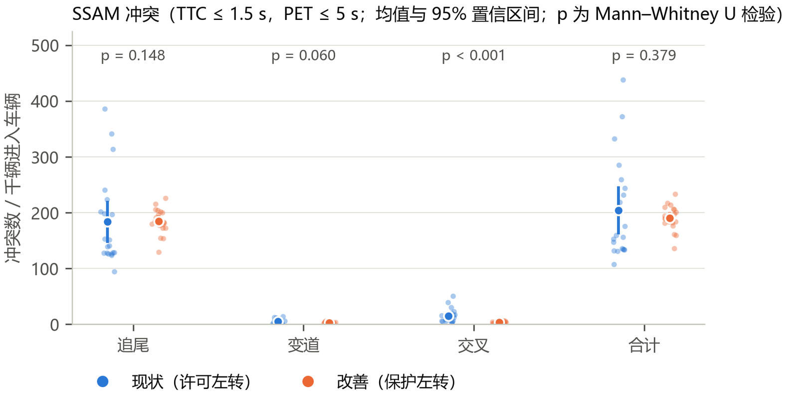
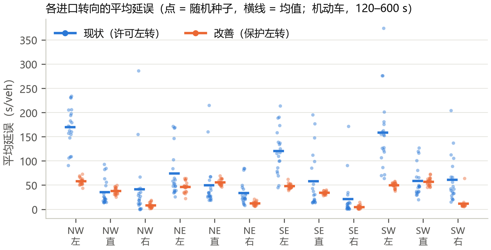
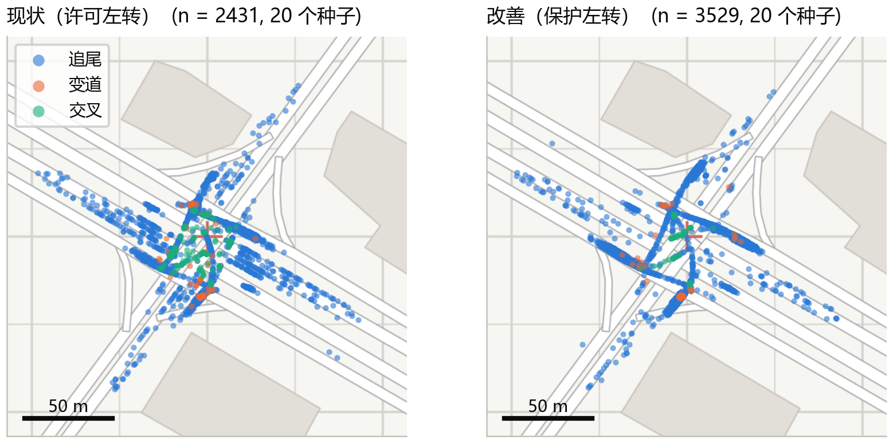
"I picked the junction by evidence. It was first by crashes. It was still sixth by EB excess after I controlled for exposure. So the risk sits at the node. I coded the geometry from OSM. I took turning volumes from the demand model with select-link. I built two signal plans. I found that the default gaps let left-turners accept unsafe gaps. So I scripted 89 conflict areas and their priority rules. I added one rule: a clearing left-turn has priority at phase change. I ran twenty seeds per plan and counted conflicts with SSAM. Protected lefts cut crossing conflicts 79 percent and delay 39 percent. They served 96 percent of demand instead of 63 percent. The rear-end rate did not change. I raise one caveat first: the base plan is oversaturated, so its disadvantage is a lower bound. And conflicts are surrogates, not crashes."
- 现状方案过饱和。左转排队溢出 70 m 展宽段，堵住直行，延伸到路网边界。部分车辆进不来。三种补救都没有采用：核实实际展宽、延长进口道、降低需求系数。我只单独报告通过量缺口。
- 几何依据 OSM 与影像。流量来自没有用流量计数校准的模型，并统一缩放 0.44。配时是 Webster 计算值。现状两相位许可左转是假设，需要现场核实。学生版不能仿真行人。电动车量和左转后间隙 2.0 s 是判断值。
- SSAM 冲突 ≠ 事故。结论只用于两方案相对比较。
- 原计划的左转比例 ±30% 敏感性和 2019 需求情景没有进入正式结果。